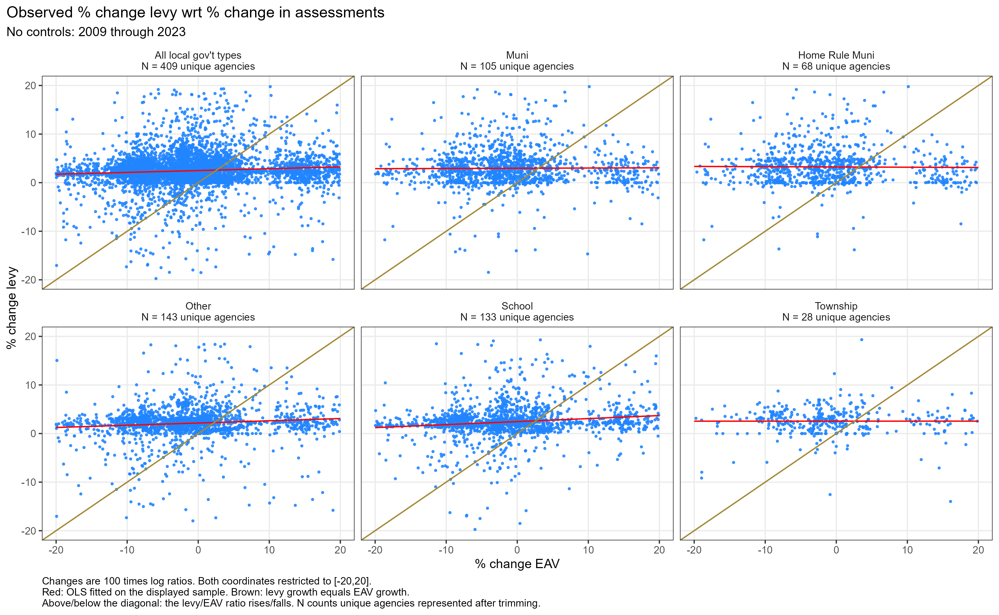
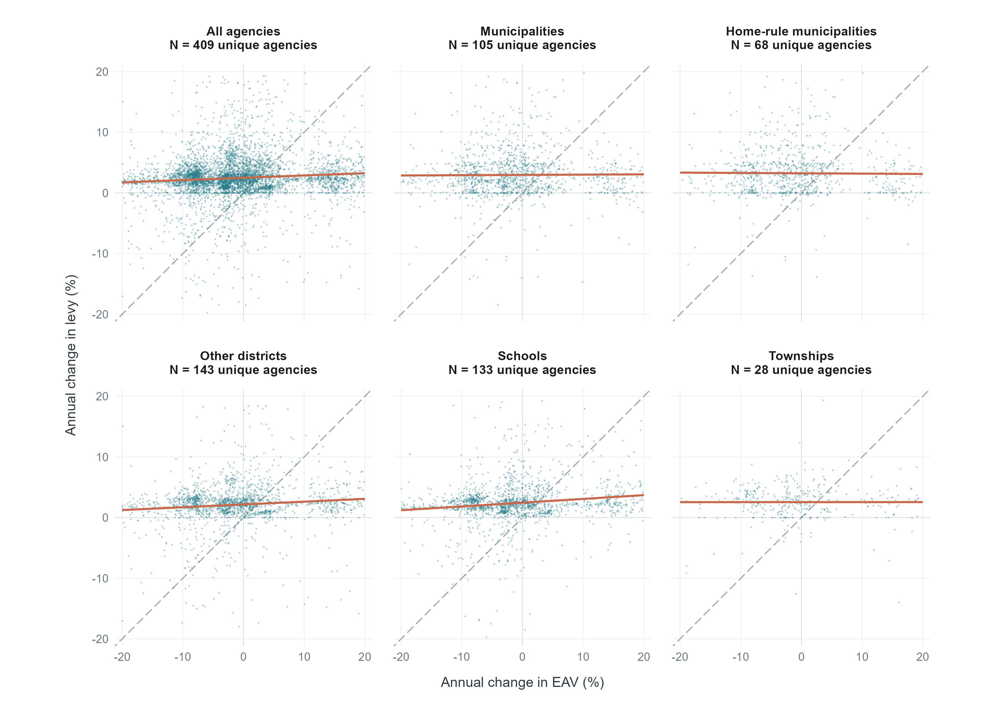

Code
source("scripts/descriptive_stats_22_lags_cluster_AWM_v7_4_1.R")
quarto::quarto_render("levy_paper_tables_v7_4.qmd")| agency | variable | N | p5 | p25 | p50 | p75 | p95 |
|---|---|---|---|---|---|---|---|
| Muni | d_levy | 1572 | -1.3 | 0.9 | 2.6 | 4.6 | 11.8 |
| Muni | d_eav | 1575 | -15.5 | -6.9 | -1.5 | 4.2 | 24.1 |
| Other | d_levy | 2145 | -4.6 | 1.1 | 2.3 | 3.4 | 8.3 |
| Other | d_eav | 2145 | -16.3 | -7.2 | -1.6 | 4.1 | 24.1 |
| School | d_levy | 1995 | -2.7 | 1.4 | 2.3 | 3.5 | 8.6 |
| School | d_eav | 1995 | -14.8 | -7.1 | -1.6 | 4.1 | 23.3 |
| Township | d_levy | 420 | -2.0 | 1.2 | 2.7 | 4.1 | 6.8 |
| Township | d_eav | 420 | -14.1 | -6.8 | -1.4 | 3.9 | 21.6 |
| All | d_levy | 6132 | -2.9 | 1.1 | 2.4 | 3.8 | 9.2 |
| All | d_eav | 6135 | -15.4 | -7.0 | -1.6 | 4.1 | 23.8 |
Each point represents an agency-year. Both growth rates are restricted to ±20 (100 times annual log ratios). Red lines fit OLS with an intercept to the displayed observations; brown lines show equal levy and EAV growth. Each panel’s N counts unique agencies (distinct agency_group values) with at least one observation remaining after trimming during 2009–2023. An agency is counted once within each panel regardless of how many years it contributes. Home-rule municipalities are also included in the municipal and all-agency panels, so counts across panels should not be added together.

This version shows the same observations and fits, with equal axis scales and the explanatory text outside the image. Teal points represent agency-years, terracotta lines show OLS fits, and dashed gray diagonals mark equal levy and EAV growth. The years and sample restrictions are the same as above.

| M1 | M2 | M3 | |
|---|---|---|---|
| * p < 0.1, ** p < 0.05, *** p < 0.01 | |||
| Cook County, Illinois data from 2008 through 2023. | |||
| Columns 2 and 3 include year-by-home-rule fixed effects; column 3 includes unit fixed effects. | |||
| Standard errors are clustered by taxing agency. upper_bound is estimate + 1.645 * clustered SE. | |||
| Change in EAV | 0.071*** | 0.090*** | 0.074*** |
| (0.010) | (0.025) | (0.022) | |
| N | 6132 | 6132 | 6130 |
| upper_bound | 0.088 | 0.131 | 0.110 |
| model | N | estimate | std_error | p_value | upper_bound |
|---|---|---|---|---|---|
| M1 | 6132 | 0.071*** | 0.010 | 0.000 | 0.088 |
| M2 | 6132 | 0.090*** | 0.025 | 0.000 | 0.131 |
| M3 | 6130 | 0.074*** | 0.022 | 0.001 | 0.110 |
| M1 | M2 | M3 | |
|---|---|---|---|
| * p < 0.1, ** p < 0.05, *** p < 0.01 | |||
| Cook County, Illinois data from 2008 through 2023. | |||
| Columns 2 and 3 include year-by-home-rule fixed effects; column 3 includes unit fixed effects. | |||
| d_eav is treated as endogenous and instrumented by reassessment year. | |||
| Standard errors are clustered by taxing agency. p_exog is a cluster-robust control-function test of the null that d_eav is exogenous. regF is the first-stage F statistic. | |||
| Change in EAV | −0.011 | −0.091 | −0.092 |
| (0.031) | (0.063) | (0.063) | |
| N | 6132 | 6132 | 6130 |
| upper_bound | 0.040 | 0.012 | 0.011 |
| p_exog | 0.010 | 0.010 | 0.014 |
| regF | 3690.6 | 2381.2 | 2368.1 |
The coefficient test asks whether the IV estimate differs from zero. p_exog asks whether OLS treatment of EAV growth as exogenous appears defensible. The first-stage statistic asks whether reassessment year predicts EAV growth strongly enough to identify the IV coefficient.
Failure to reject exogeneity also does not prove exogeneity, especially when the instrument is weak
| model | N | estimate | std_error | p_value | upper_bound | first_stage_F | p_exog |
|---|---|---|---|---|---|---|---|
| M1 | 6132 | -0.011 | 0.031 | 0.724 | 0.040 | 3690.6 | 0.010 |
| M2 | 6132 | -0.091 | 0.063 | 0.146 | 0.012 | 2381.2 | 0.010 |
| M3 | 6130 | -0.092 | 0.063 | 0.144 | 0.011 | 2368.1 | 0.014 |
Comparing stars across columns does not show if agency types differ. It does not imply that the school and township coefficients differ significantly. A formal comparison requires a pooled interaction model or an appropriate cross-group Wald test. Text shouldn’t say significant for schools and not significant for townships, for example.
| row | Home-rule municipalities | Non-home-rule municipalities | Other | Townships | Schools |
|---|---|---|---|---|---|
| No controls | 0.058 | 0.075 | 0.123 | 0.054 | 0.126 |
| Year FE | 0.163 | 0.045 | 0.180 | 0.063 | 0.187 |
| Year + unit FE | 0.149 | 0.027 | 0.145 | 0.064 | 0.167 |
| IG revenue + year + unit FE | 0.424 | 0.353 | NA | NA | 0.265 |
| Same sample as IG row, no IG control | 0.422 | 0.326 | NA | NA | 0.264 |
| Enrollment + year + unit FE | NA | NA | NA | NA | 0.264 |
| row | agency | N | estimate | std_error | p_value | upper_bound |
|---|---|---|---|---|---|---|
| No controls | Home-rule municipalities | 1001 | 0.015 | 0.026 | 0.578 | 0.058 |
| No controls | Non-home-rule municipalities | 571 | 0.039* | 0.022 | 0.087 | 0.075 |
| No controls | Other | 2145 | 0.093*** | 0.018 | 0.000 | 0.123 |
| No controls | Townships | 420 | 0.009 | 0.027 | 0.737 | 0.054 |
| No controls | Schools | 1995 | 0.096*** | 0.018 | 0.000 | 0.126 |
| Year FE | Home-rule municipalities | 1001 | 0.077 | 0.052 | 0.148 | 0.163 |
| Year FE | Non-home-rule municipalities | 571 | -0.034 | 0.048 | 0.484 | 0.045 |
| Year FE | Other | 2145 | 0.109** | 0.044 | 0.014 | 0.180 |
| Year FE | Townships | 420 | 0.018 | 0.027 | 0.502 | 0.063 |
| Year FE | Schools | 1995 | 0.114** | 0.044 | 0.010 | 0.187 |
| Year + unit FE | Home-rule municipalities | 1001 | 0.071 | 0.048 | 0.140 | 0.149 |
| Year + unit FE | Non-home-rule municipalities | 571 | -0.051 | 0.047 | 0.286 | 0.027 |
| Year + unit FE | Other | 2143 | 0.085** | 0.036 | 0.021 | 0.145 |
| Year + unit FE | Townships | 420 | 0.018 | 0.028 | 0.509 | 0.064 |
| Year + unit FE | Schools | 1995 | 0.102** | 0.040 | 0.011 | 0.167 |
| IG revenue + year + unit FE | Home-rule municipalities | 479 | 0.229* | 0.119 | 0.059 | 0.424 |
| IG revenue + year + unit FE | Non-home-rule municipalities | 98 | 0.127 | 0.137 | 0.365 | 0.353 |
| IG revenue + year + unit FE | Schools | 1722 | 0.157** | 0.066 | 0.019 | 0.265 |
| Same sample as IG row, no IG control | Home-rule municipalities | 479 | 0.229* | 0.118 | 0.057 | 0.422 |
| Same sample as IG row, no IG control | Non-home-rule municipalities | 98 | 0.117 | 0.127 | 0.371 | 0.326 |
| Same sample as IG row, no IG control | Schools | 1722 | 0.156** | 0.066 | 0.019 | 0.264 |
| Enrollment + year + unit FE | Schools | 1722 | 0.155** | 0.066 | 0.021 | 0.264 |
Shows whether the IV coefficient differs from zero separately by agency type.
The table should report, for every model:
a cluster-robust first-stage Wald/Kleibergen–Paap statistic;
first-stage partial R2, if practical;
a weak-IV-robust confidence interval or test when strength is questionable;
optionally the exogeneity-test p-value.
| row | Home-rule municipalities | Non-home-rule municipalities | Other | Townships | Schools |
|---|---|---|---|---|---|
| No controls | 0.027 | 0.061 | 0.080 | 0.043 | 0.108 |
| Year FE | 0.085 | 0.167 | 0.087 | 0.081 | 0.065 |
| Year + unit FE | 0.085 | 0.167 | 0.087 | 0.081 | 0.065 |
| IG revenue + year + unit FE | 0.136 | 0.240 | NA | NA | 0.128 |
| Same sample as IG row, no IG control | 0.138 | 0.228 | NA | NA | 0.130 |
| Enrollment + year + unit FE | NA | NA | NA | NA | 0.121 |
| row | agency | N | estimate | std_error | p_value | upper_bound | first_stage_F | p_exog |
|---|---|---|---|---|---|---|---|---|
| No controls | Home-rule municipalities | 1001 | -0.045 | 0.044 | 0.311 | 0.027 | 530.4 | 0.289 |
| No controls | Non-home-rule municipalities | 571 | -0.029 | 0.055 | 0.597 | 0.061 | 604.6 | 0.311 |
| No controls | Other | 2145 | -0.052 | 0.080 | 0.515 | 0.080 | 1018.2 | 0.068 |
| No controls | Townships | 420 | -0.058 | 0.061 | 0.350 | 0.043 | 687.3 | 0.239 |
| No controls | Schools | 1995 | 0.065** | 0.026 | 0.015 | 0.108 | 1307.5 | 0.330 |
| Year FE | Home-rule municipalities | 1001 | -0.030 | 0.070 | 0.668 | 0.085 | 366.2 | 0.283 |
| Year FE | Non-home-rule municipalities | 571 | -0.053 | 0.134 | 0.694 | 0.167 | 25.8 | 0.895 |
| Year FE | Other | 2145 | -0.208 | 0.179 | 0.248 | 0.087 | 698.3 | 0.088 |
| Year FE | Townships | 420 | -0.064 | 0.088 | 0.473 | 0.081 | 1202.9 | 0.277 |
| Year FE | Schools | 1995 | 0.011 | 0.033 | 0.734 | 0.065 | 814.6 | 0.075 |
| Year + unit FE | Home-rule municipalities | 1001 | -0.031 | 0.070 | 0.664 | 0.085 | 362.2 | 0.289 |
| Year + unit FE | Non-home-rule municipalities | 571 | -0.061 | 0.139 | 0.661 | 0.167 | 23.9 | 0.947 |
| Year + unit FE | Other | 2143 | -0.208 | 0.180 | 0.248 | 0.087 | 698.9 | 0.103 |
| Year + unit FE | Townships | 420 | -0.064 | 0.088 | 0.473 | 0.081 | 1202.9 | 0.261 |
| Year + unit FE | Schools | 1995 | 0.011 | 0.033 | 0.742 | 0.065 | 816.4 | 0.090 |
| IG revenue + year + unit FE | Home-rule municipalities | 479 | -0.514 | 0.395 | 0.199 | 0.136 | 7.3 | 0.060 |
| IG revenue + year + unit FE | Non-home-rule municipalities | 98 | -0.108 | 0.212 | 0.616 | 0.240 | 2.4 | 0.086 |
| IG revenue + year + unit FE | Schools | 1722 | -0.037 | 0.100 | 0.714 | 0.128 | 122.0 | 0.135 |
| Same sample as IG row, no IG control | Home-rule municipalities | 479 | -0.514 | 0.396 | 0.200 | 0.138 | 7.3 | 0.062 |
| Same sample as IG row, no IG control | Non-home-rule municipalities | 98 | -0.109 | 0.205 | 0.601 | 0.228 | 2.3 | 0.085 |
| Same sample as IG row, no IG control | Schools | 1722 | -0.035 | 0.101 | 0.728 | 0.130 | 122.4 | 0.141 |
| Enrollment + year + unit FE | Schools | 1722 | -0.045 | 0.101 | 0.659 | 0.121 | 123.1 | 0.122 |
| row | agency | N | first_stage_F | p_exog |
|---|---|---|---|---|
| No controls | Home-rule municipalities | 1001 | 530.4 | 0.289 |
| No controls | Non-home-rule municipalities | 571 | 604.6 | 0.311 |
| No controls | Other | 2145 | 1018.2 | 0.068 |
| No controls | Townships | 420 | 687.3 | 0.239 |
| No controls | Schools | 1995 | 1307.5 | 0.330 |
| Year FE | Home-rule municipalities | 1001 | 366.2 | 0.283 |
| Year FE | Non-home-rule municipalities | 571 | 25.8 | 0.895 |
| Year FE | Other | 2145 | 698.3 | 0.088 |
| Year FE | Townships | 420 | 1202.9 | 0.277 |
| Year FE | Schools | 1995 | 814.6 | 0.075 |
| Year + unit FE | Home-rule municipalities | 1001 | 362.2 | 0.289 |
| Year + unit FE | Non-home-rule municipalities | 571 | 23.9 | 0.947 |
| Year + unit FE | Other | 2143 | 698.9 | 0.103 |
| Year + unit FE | Townships | 420 | 1202.9 | 0.261 |
| Year + unit FE | Schools | 1995 | 816.4 | 0.090 |
| IG revenue + year + unit FE | Home-rule municipalities | 479 | 7.3 | 0.060 |
| IG revenue + year + unit FE | Non-home-rule municipalities | 98 | 2.4 | 0.086 |
| IG revenue + year + unit FE | Schools | 1722 | 122.0 | 0.135 |
| Same sample as IG row, no IG control | Home-rule municipalities | 479 | 7.3 | 0.062 |
| Same sample as IG row, no IG control | Non-home-rule municipalities | 98 | 2.3 | 0.085 |
| Same sample as IG row, no IG control | Schools | 1722 | 122.4 | 0.141 |
| Enrollment + year + unit FE | Schools | 1722 | 123.1 | 0.122 |
| M1 | M2 | M3 | |
|---|---|---|---|
| * p < 0.1, ** p < 0.05, *** p < 0.01 | |||
| Standard errors are clustered by taxing agency. | |||
| p_equal tests equality of the positive- and negative-EAV coefficients. | |||
| pos_upper_bound and neg_upper_bound equal the corresponding coefficient plus 1.645 times the clustered SE. neg_d_eav is coded as the actual negative value of d_eav when EAV declines. | |||
| Positive EAV change | 0.068*** | 0.092** | 0.082** |
| (0.017) | (0.036) | (0.035) | |
| Negative EAV change | 0.078*** | 0.081 | 0.044 |
| (0.025) | (0.086) | (0.089) | |
| N | 6132 | 6132 | 6130 |
| p_equal | 0.777 | 0.920 | 0.744 |
| pos_upper_bound | 0.096 | 0.152 | 0.140 |
| neg_upper_bound | 0.119 | 0.223 | 0.191 |
| model | component | N | estimate | std_error | p_value | upper_bound | p_equal |
|---|---|---|---|---|---|---|---|
| M1 | Positive EAV change | 6132 | 0.068*** | 0.017 | 0.000 | 0.096 | 0.777 |
| M1 | Negative EAV change | 6132 | 0.078*** | 0.025 | 0.002 | 0.119 | 0.777 |
| M2 | Positive EAV change | 6132 | 0.092** | 0.036 | 0.012 | 0.152 | 0.920 |
| M2 | Negative EAV change | 6132 | 0.081 | 0.086 | 0.350 | 0.223 | 0.920 |
| M3 | Positive EAV change | 6130 | 0.082** | 0.035 | 0.020 | 0.140 | 0.744 |
| M3 | Negative EAV change | 6130 | 0.044 | 0.089 | 0.618 | 0.191 | 0.744 |
| model | component | N | estimate | std_error | p_value | upper_bound | p_equal |
|---|---|---|---|---|---|---|---|
| M1 | Positive EAV change | 6132 | 0.068*** | 0.017 | 0.000 | 0.096 | 0.777 |
| M1 | Negative EAV change | 6132 | 0.078*** | 0.025 | 0.002 | 0.119 | 0.777 |
| M2 | Positive EAV change | 6132 | 0.092** | 0.036 | 0.012 | 0.152 | 0.920 |
| M2 | Negative EAV change | 6132 | 0.081 | 0.086 | 0.350 | 0.223 | 0.920 |
| M3 | Positive EAV change | 6130 | 0.082** | 0.035 | 0.020 | 0.140 | 0.744 |
| M3 | Negative EAV change | 6130 | 0.044 | 0.089 | 0.618 | 0.191 | 0.744 |
| M1 | M2 | M3 | |
|---|---|---|---|
| * p < 0.1, ** p < 0.05, *** p < 0.01 | |||
| Standard errors are clustered by taxing agency. | |||
| F_neg and F_pos are equation-specific, cluster-robust first-stage Wald statistics. | |||
| SW_F_neg and SW_F_pos are Sanderson-Windmeijer conditional F statistics for the two endogenous variables. | |||
| p_exog is a cluster-robust joint control-function test that the positive and negative EAV variables are exogenous. | |||
| p_equal tests equality of the positive- and negative-EAV coefficients. | |||
| pos_upper_bound and neg_upper_bound equal the corresponding coefficient plus 1.645 times the clustered SE. neg_d_eav is coded as the actual negative value of d_eav when EAV declines. | |||
| Positive EAV change | 0.004 | −0.051 | −0.051 |
| (0.027) | (0.042) | (0.042) | |
| Negative EAV change | 0.114*** | 0.060 | 0.061 |
| (0.034) | (0.050) | (0.050) | |
| N | 6132 | 6132 | 6130 |
| F_neg | 8756.8 | 1082.0 | 1068.0 |
| F_pos | 4244.6 | 2646.1 | 2628.1 |
| SW_F_neg | 3909.9 | 1959.8 | 1945.7 |
| SW_F_pos | 4633.3 | 5118.0 | 5099.5 |
| p_exog | 0.156 | 0.009 | 0.012 |
| p_equal | 0.014 | 0.107 | 0.104 |
| pos_upper_bound | 0.048 | 0.019 | 0.019 |
| neg_upper_bound | 0.170 | 0.142 | 0.144 |
| model | component | N | estimate | std_error | p_value | upper_bound | F_neg | F_pos | SW_F_neg | SW_F_pos | p_exog | p_equal |
|---|---|---|---|---|---|---|---|---|---|---|---|---|
| M1 | Positive EAV change | 6132 | 0.004 | 0.027 | 0.883 | 0.048 | 8756.8 | 4244.6 | 3909.9 | 4633.3 | 0.156 | 0.014 |
| M1 | Negative EAV change | 6132 | 0.114*** | 0.034 | 0.001 | 0.170 | 8756.8 | 4244.6 | 3909.9 | 4633.3 | 0.156 | 0.014 |
| M2 | Positive EAV change | 6132 | -0.051 | 0.042 | 0.233 | 0.019 | 1082.0 | 2646.1 | 1959.8 | 5118.0 | 0.009 | 0.107 |
| M2 | Negative EAV change | 6132 | 0.060 | 0.050 | 0.227 | 0.142 | 1082.0 | 2646.1 | 1959.8 | 5118.0 | 0.009 | 0.107 |
| M3 | Positive EAV change | 6130 | -0.051 | 0.042 | 0.234 | 0.019 | 1068.0 | 2628.1 | 1945.7 | 5099.5 | 0.012 | 0.104 |
| M3 | Negative EAV change | 6130 | 0.061 | 0.050 | 0.220 | 0.144 | 1068.0 | 2628.1 | 1945.7 | 5099.5 | 0.012 | 0.104 |
| model | component | N | estimate | std_error | p_value | upper_bound | F_neg | F_pos | SW_F_neg | SW_F_pos | p_exog | p_equal |
|---|---|---|---|---|---|---|---|---|---|---|---|---|
| M1 | Positive EAV change | 6132 | 0.004 | 0.027 | 0.883 | 0.048 | 8756.8 | 4244.6 | 3909.9 | 4633.3 | 0.156 | 0.014 |
| M1 | Negative EAV change | 6132 | 0.114*** | 0.034 | 0.001 | 0.170 | 8756.8 | 4244.6 | 3909.9 | 4633.3 | 0.156 | 0.014 |
| M2 | Positive EAV change | 6132 | -0.051 | 0.042 | 0.233 | 0.019 | 1082.0 | 2646.1 | 1959.8 | 5118.0 | 0.009 | 0.107 |
| M2 | Negative EAV change | 6132 | 0.060 | 0.050 | 0.227 | 0.142 | 1082.0 | 2646.1 | 1959.8 | 5118.0 | 0.009 | 0.107 |
| M3 | Positive EAV change | 6130 | -0.051 | 0.042 | 0.234 | 0.019 | 1068.0 | 2628.1 | 1945.7 | 5099.5 | 0.012 | 0.104 |
| M3 | Negative EAV change | 6130 | 0.061 | 0.050 | 0.220 | 0.144 | 1068.0 | 2628.1 | 1945.7 | 5099.5 | 0.012 | 0.104 |
| model | N | F_neg | F_pos | SW_F_neg | SW_F_pos | p_exog |
|---|---|---|---|---|---|---|
| M1 | 6132 | 8756.8 | 4244.6 | 3909.9 | 4633.3 | 0.156 |
| M2 | 6132 | 1082.0 | 2646.1 | 1959.8 | 5118.0 | 0.009 |
| M3 | 6130 | 1068.0 | 2628.1 | 1945.7 | 5099.5 | 0.012 |
| model | component | N | estimate | std_error | p_value | upper_bound | F_neg | F_pos | SW_F_neg | SW_F_pos | p_exog | p_equal |
|---|---|---|---|---|---|---|---|---|---|---|---|---|
| M1 | Positive EAV change | 6132 | 0.007 | 0.023 | 0.764 | 0.045 | 2640.9 | 2185.9 | 5915.4 | 5239.9 | 0.085 | 0.037 |
| M1 | Negative EAV change | 6132 | 0.140*** | 0.044 | 0.002 | 0.213 | 2640.9 | 2185.9 | 5915.4 | 5239.9 | 0.085 | 0.037 |
| M2 | Positive EAV change | 6132 | -0.051 | 0.042 | 0.233 | 0.019 | 1082.0 | 2646.1 | 1959.8 | 5118.0 | 0.009 | 0.107 |
| M2 | Negative EAV change | 6132 | 0.060 | 0.050 | 0.227 | 0.142 | 1082.0 | 2646.1 | 1959.8 | 5118.0 | 0.009 | 0.107 |
| M3 | Positive EAV change | 6130 | -0.051 | 0.042 | 0.234 | 0.019 | 1068.0 | 2628.1 | 1945.7 | 5099.5 | 0.012 | 0.104 |
| M3 | Negative EAV change | 6130 | 0.061 | 0.050 | 0.220 | 0.144 | 1068.0 | 2628.1 | 1945.7 | 5099.5 | 0.012 | 0.104 |
| row | Home-rule municipalities | Non-home-rule municipalities | Other | Townships | Schools |
|---|---|---|---|---|---|
| No controls | 0.080 | 0.030 | 0.135 | 0.053 | 0.165 |
| Year FE | 0.188 | 0.116 | 0.238 | 0.038 | 0.191 |
| Year + unit FE | 0.168 | 0.105 | 0.223 | 0.037 | 0.177 |
| IG revenue + year + unit FE | 0.576 | 0.510 | NA | NA | 0.331 |
| Same sample as IG row, no IG control | 0.574 | 0.490 | NA | NA | 0.330 |
| Enrollment + year + unit FE | NA | NA | NA | NA | 0.330 |
| row | agency | N | estimate | std_error | p_value | upper_bound | p_equal |
|---|---|---|---|---|---|---|---|
| No controls | Home-rule municipalities | 1001 | 0.004 | 0.046 | 0.932 | 0.080 | 0.649 |
| No controls | Non-home-rule municipalities | 571 | -0.007 | 0.022 | 0.763 | 0.030 | 0.201 |
| No controls | Other | 2145 | 0.087*** | 0.030 | 0.004 | 0.135 | 0.813 |
| No controls | Townships | 420 | 0.014 | 0.024 | 0.573 | 0.053 | 0.815 |
| No controls | Schools | 1995 | 0.111*** | 0.033 | 0.001 | 0.165 | 0.392 |
| Year FE | Home-rule municipalities | 1001 | 0.083 | 0.064 | 0.199 | 0.188 | 0.713 |
| Year FE | Non-home-rule municipalities | 571 | 0.027 | 0.054 | 0.625 | 0.116 | 0.170 |
| Year FE | Other | 2145 | 0.123* | 0.070 | 0.083 | 0.238 | 0.803 |
| Year FE | Townships | 420 | -0.022 | 0.037 | 0.555 | 0.038 | 0.037 |
| Year FE | Schools | 1995 | 0.102* | 0.054 | 0.059 | 0.191 | 0.334 |
| Year + unit FE | Home-rule municipalities | 1001 | 0.070 | 0.060 | 0.249 | 0.168 | 0.937 |
| Year + unit FE | Non-home-rule municipalities | 571 | 0.016 | 0.054 | 0.765 | 0.105 | 0.132 |
| Year + unit FE | Other | 2143 | 0.110 | 0.069 | 0.113 | 0.223 | 0.667 |
| Year + unit FE | Townships | 420 | -0.025 | 0.037 | 0.513 | 0.037 | 0.032 |
| Year + unit FE | Schools | 1995 | 0.096* | 0.049 | 0.053 | 0.177 | 0.632 |
| IG revenue + year + unit FE | Home-rule municipalities | 479 | 0.293* | 0.172 | 0.095 | 0.576 | 0.320 |
| IG revenue + year + unit FE | Non-home-rule municipalities | 98 | 0.195 | 0.192 | 0.322 | 0.510 | 0.581 |
| IG revenue + year + unit FE | Schools | 1722 | 0.175* | 0.095 | 0.067 | 0.331 | 0.594 |
| Same sample as IG row, no IG control | Home-rule municipalities | 479 | 0.293* | 0.171 | 0.093 | 0.574 | 0.319 |
| Same sample as IG row, no IG control | Non-home-rule municipalities | 98 | 0.182 | 0.188 | 0.345 | 0.490 | 0.587 |
| Same sample as IG row, no IG control | Schools | 1722 | 0.175* | 0.095 | 0.067 | 0.330 | 0.585 |
| Enrollment + year + unit FE | Schools | 1722 | 0.174* | 0.095 | 0.070 | 0.330 | 0.580 |
| row | Home-rule municipalities | Non-home-rule municipalities | Other | Townships | Schools |
|---|---|---|---|---|---|
| No controls - Positive EAV change | 0.080 | 0.030 | 0.135 | 0.053 | 0.165 |
| No controls - Negative EAV change | 0.090 | 0.267 | 0.196 | 0.091 | 0.105 |
| Year FE - Positive EAV change | 0.188 | 0.116 | 0.238 | 0.038 | 0.191 |
| Year FE - Negative EAV change | 0.152 | 0.042 | 0.378 | 0.365 | 0.236 |
| Year + unit FE - Positive EAV change | 0.168 | 0.105 | 0.223 | 0.037 | 0.177 |
| Year + unit FE - Negative EAV change | 0.182 | 0.005 | 0.328 | 0.386 | 0.204 |
| IG revenue + year + unit FE - Positive EAV change | 0.576 | 0.510 | NA | NA | 0.331 |
| IG revenue + year + unit FE - Negative EAV change | 0.198 | 0.342 | NA | NA | 0.189 |
| Same sample as IG row, no IG control - Positive EAV change | 0.574 | 0.490 | NA | NA | 0.330 |
| Same sample as IG row, no IG control - Negative EAV change | 0.198 | 0.312 | NA | NA | 0.187 |
| Enrollment + year + unit FE - Positive EAV change | NA | NA | NA | NA | 0.330 |
| Enrollment + year + unit FE - Negative EAV change | NA | NA | NA | NA | 0.184 |
| row | agency | component | N | estimate | std_error | p_value | upper_bound | p_equal |
|---|---|---|---|---|---|---|---|---|
| No controls | Home-rule municipalities | Positive EAV change | 1001 | 0.004 | 0.046 | 0.932 | 0.080 | 0.649 |
| No controls | Home-rule municipalities | Negative EAV change | 1001 | 0.036 | 0.033 | 0.289 | 0.090 | 0.649 |
| No controls | Non-home-rule municipalities | Positive EAV change | 571 | -0.007 | 0.022 | 0.763 | 0.030 | 0.201 |
| No controls | Non-home-rule municipalities | Negative EAV change | 571 | 0.126 | 0.086 | 0.149 | 0.267 | 0.201 |
| No controls | Other | Positive EAV change | 2145 | 0.087*** | 0.030 | 0.004 | 0.135 | 0.813 |
| No controls | Other | Negative EAV change | 2145 | 0.105* | 0.055 | 0.061 | 0.196 | 0.813 |
| No controls | Townships | Positive EAV change | 420 | 0.014 | 0.024 | 0.573 | 0.053 | 0.815 |
| No controls | Townships | Negative EAV change | 420 | 0.001 | 0.055 | 0.990 | 0.091 | 0.815 |
| No controls | Schools | Positive EAV change | 1995 | 0.111*** | 0.033 | 0.001 | 0.165 | 0.392 |
| No controls | Schools | Negative EAV change | 1995 | 0.067*** | 0.023 | 0.004 | 0.105 | 0.392 |
| Year FE | Home-rule municipalities | Positive EAV change | 1001 | 0.083 | 0.064 | 0.199 | 0.188 | 0.713 |
| Year FE | Home-rule municipalities | Negative EAV change | 1001 | 0.049 | 0.063 | 0.438 | 0.152 | 0.713 |
| Year FE | Non-home-rule municipalities | Positive EAV change | 571 | 0.027 | 0.054 | 0.625 | 0.116 | 0.170 |
| Year FE | Non-home-rule municipalities | Negative EAV change | 571 | -0.219 | 0.159 | 0.175 | 0.042 | 0.170 |
| Year FE | Other | Positive EAV change | 2145 | 0.123* | 0.070 | 0.083 | 0.238 | 0.803 |
| Year FE | Other | Negative EAV change | 2145 | 0.063 | 0.192 | 0.745 | 0.378 | 0.803 |
| Year FE | Townships | Positive EAV change | 420 | -0.022 | 0.037 | 0.555 | 0.038 | 0.037 |
| Year FE | Townships | Negative EAV change | 420 | 0.218** | 0.089 | 0.021 | 0.365 | 0.037 |
| Year FE | Schools | Positive EAV change | 1995 | 0.102* | 0.054 | 0.059 | 0.191 | 0.334 |
| Year FE | Schools | Negative EAV change | 1995 | 0.169*** | 0.041 | 0.000 | 0.236 | 0.334 |
| Year + unit FE | Home-rule municipalities | Positive EAV change | 1001 | 0.070 | 0.060 | 0.249 | 0.168 | 0.937 |
| Year + unit FE | Home-rule municipalities | Negative EAV change | 1001 | 0.077 | 0.064 | 0.229 | 0.182 | 0.937 |
| Year + unit FE | Non-home-rule municipalities | Positive EAV change | 571 | 0.016 | 0.054 | 0.765 | 0.105 | 0.132 |
| Year + unit FE | Non-home-rule municipalities | Negative EAV change | 571 | -0.264 | 0.164 | 0.115 | 0.005 | 0.132 |
| Year + unit FE | Other | Positive EAV change | 2143 | 0.110 | 0.069 | 0.113 | 0.223 | 0.667 |
| Year + unit FE | Other | Negative EAV change | 2143 | 0.001 | 0.199 | 0.998 | 0.328 | 0.667 |
| Year + unit FE | Townships | Positive EAV change | 420 | -0.025 | 0.037 | 0.513 | 0.037 | 0.032 |
| Year + unit FE | Townships | Negative EAV change | 420 | 0.233** | 0.093 | 0.018 | 0.386 | 0.032 |
| Year + unit FE | Schools | Positive EAV change | 1995 | 0.096* | 0.049 | 0.053 | 0.177 | 0.632 |
| Year + unit FE | Schools | Negative EAV change | 1995 | 0.131*** | 0.044 | 0.004 | 0.204 | 0.632 |
| IG revenue + year + unit FE | Home-rule municipalities | Positive EAV change | 479 | 0.293* | 0.172 | 0.095 | 0.576 | 0.320 |
| IG revenue + year + unit FE | Home-rule municipalities | Negative EAV change | 479 | 0.094 | 0.063 | 0.143 | 0.198 | 0.320 |
| IG revenue + year + unit FE | Non-home-rule municipalities | Positive EAV change | 98 | 0.195 | 0.192 | 0.322 | 0.510 | 0.581 |
| IG revenue + year + unit FE | Non-home-rule municipalities | Negative EAV change | 98 | 0.031 | 0.189 | 0.871 | 0.342 | 0.581 |
| IG revenue + year + unit FE | Schools | Positive EAV change | 1722 | 0.175* | 0.095 | 0.067 | 0.331 | 0.594 |
| IG revenue + year + unit FE | Schools | Negative EAV change | 1722 | 0.114** | 0.046 | 0.014 | 0.189 | 0.594 |
| Same sample as IG row, no IG control | Home-rule municipalities | Positive EAV change | 479 | 0.293* | 0.171 | 0.093 | 0.574 | 0.319 |
| Same sample as IG row, no IG control | Home-rule municipalities | Negative EAV change | 479 | 0.093 | 0.063 | 0.147 | 0.198 | 0.319 |
| Same sample as IG row, no IG control | Non-home-rule municipalities | Positive EAV change | 98 | 0.182 | 0.188 | 0.345 | 0.490 | 0.587 |
| Same sample as IG row, no IG control | Non-home-rule municipalities | Negative EAV change | 98 | 0.023 | 0.176 | 0.899 | 0.312 | 0.587 |
| Same sample as IG row, no IG control | Schools | Positive EAV change | 1722 | 0.175* | 0.095 | 0.067 | 0.330 | 0.585 |
| Same sample as IG row, no IG control | Schools | Negative EAV change | 1722 | 0.112** | 0.045 | 0.015 | 0.187 | 0.585 |
| Enrollment + year + unit FE | Schools | Positive EAV change | 1722 | 0.174* | 0.095 | 0.070 | 0.330 | 0.580 |
| Enrollment + year + unit FE | Schools | Negative EAV change | 1722 | 0.111** | 0.045 | 0.015 | 0.184 | 0.580 |
| row | Home-rule municipalities | Non-home-rule municipalities | Other | Townships | Schools |
|---|---|---|---|---|---|
| No controls | 0.002 | 0.056 | 0.089 | 0.041 | 0.105 |
| Year FE | 0.040 | -0.027 | 0.091 | 0.072 | 0.041 |
| Year + unit FE | 0.041 | -0.028 | 0.092 | 0.071 | 0.040 |
| IG revenue + year + unit FE | 0.057 | 0.490 | NA | NA | 0.043 |
| Same sample as IG row, no IG control | 0.058 | 0.442 | NA | NA | 0.042 |
| Enrollment + year + unit FE | NA | NA | NA | NA | 0.037 |
| row | agency | N | estimate | std_error | p_value | upper_bound | p_equal |
|---|---|---|---|---|---|---|---|
| No controls | Home-rule municipalities | 1001 | -0.047 | 0.030 | 0.123 | 0.002 | 0.904 |
| No controls | Non-home-rule municipalities | 571 | -0.003 | 0.036 | 0.944 | 0.056 | 0.236 |
| No controls | Other | 2145 | -0.029 | 0.072 | 0.687 | 0.089 | 0.050 |
| No controls | Townships | 420 | -0.031 | 0.044 | 0.484 | 0.041 | 0.160 |
| No controls | Schools | 1995 | 0.072*** | 0.020 | 0.000 | 0.105 | 0.316 |
| Year FE | Home-rule municipalities | 1001 | -0.013 | 0.032 | 0.688 | 0.040 | 0.707 |
| Year FE | Non-home-rule municipalities | 571 | -0.085** | 0.035 | 0.021 | -0.027 | 0.786 |
| Year FE | Other | 2145 | -0.113 | 0.124 | 0.364 | 0.091 | 0.141 |
| Year FE | Townships | 420 | -0.021 | 0.056 | 0.709 | 0.072 | 0.230 |
| Year FE | Schools | 1995 | 0.010 | 0.019 | 0.615 | 0.041 | 0.936 |
| Year + unit FE | Home-rule municipalities | 1001 | -0.012 | 0.032 | 0.710 | 0.041 | 0.687 |
| Year + unit FE | Non-home-rule municipalities | 571 | -0.086** | 0.036 | 0.020 | -0.028 | 0.834 |
| Year + unit FE | Other | 2143 | -0.113 | 0.124 | 0.366 | 0.092 | 0.140 |
| Year + unit FE | Townships | 420 | -0.021 | 0.056 | 0.710 | 0.071 | 0.233 |
| Year + unit FE | Schools | 1995 | 0.009 | 0.019 | 0.640 | 0.040 | 0.924 |
| IG revenue + year + unit FE | Home-rule municipalities | 479 | -0.064 | 0.074 | 0.387 | 0.057 | 0.096 |
| IG revenue + year + unit FE | Non-home-rule municipalities | 98 | 0.299** | 0.116 | 0.019 | 0.490 | 0.042 |
| IG revenue + year + unit FE | Schools | 1722 | -0.012 | 0.033 | 0.723 | 0.043 | 0.745 |
| Same sample as IG row, no IG control | Home-rule municipalities | 479 | -0.065 | 0.075 | 0.387 | 0.058 | 0.098 |
| Same sample as IG row, no IG control | Non-home-rule municipalities | 98 | 0.270** | 0.105 | 0.018 | 0.442 | 0.051 |
| Same sample as IG row, no IG control | Schools | 1722 | -0.012 | 0.033 | 0.713 | 0.042 | 0.769 |
| Enrollment + year + unit FE | Schools | 1722 | -0.016 | 0.032 | 0.614 | 0.037 | 0.717 |
| row | Home-rule municipalities | Non-home-rule municipalities | Other | Townships | Schools |
|---|---|---|---|---|---|
| No controls - Positive EAV change | 0.002 | 0.056 | 0.089 | 0.041 | 0.105 |
| No controls - Negative EAV change | 0.079 | 0.325 | 0.276 | 0.344 | 0.194 |
| Year FE - Positive EAV change | 0.040 | -0.027 | 0.091 | 0.072 | 0.041 |
| Year FE - Negative EAV change | 0.209 | 0.178 | 0.332 | 0.218 | 0.088 |
| Year + unit FE - Positive EAV change | 0.041 | -0.028 | 0.092 | 0.071 | 0.040 |
| Year + unit FE - Negative EAV change | 0.215 | 0.197 | 0.334 | 0.220 | 0.086 |
| IG revenue + year + unit FE - Positive EAV change | 0.057 | 0.490 | NA | NA | 0.043 |
| IG revenue + year + unit FE - Negative EAV change | 0.274 | 0.147 | NA | NA | 0.092 |
| Same sample as IG row, no IG control - Positive EAV change | 0.058 | 0.442 | NA | NA | 0.042 |
| Same sample as IG row, no IG control - Negative EAV change | 0.273 | 0.131 | NA | NA | 0.090 |
| Enrollment + year + unit FE - Positive EAV change | NA | NA | NA | NA | 0.037 |
| Enrollment + year + unit FE - Negative EAV change | NA | NA | NA | NA | 0.090 |
| row | agency | component | N | estimate | std_error | p_value | upper_bound | F_neg | F_pos | SW_F_neg | SW_F_pos | p_exog | p_equal |
|---|---|---|---|---|---|---|---|---|---|---|---|---|---|
| No controls | Home-rule municipalities | Positive EAV change | 1001 | -0.047 | 0.030 | 0.123 | 0.002 | 1581.1 | 558.4 | 566.5 | 667.8 | 0.010 | 0.904 |
| No controls | Home-rule municipalities | Negative EAV change | 1001 | -0.060 | 0.084 | 0.480 | 0.079 | 1581.1 | 558.4 | 566.5 | 667.8 | 0.010 | 0.904 |
| No controls | Non-home-rule municipalities | Positive EAV change | 571 | -0.003 | 0.036 | 0.944 | 0.056 | 823.7 | 1008.6 | 625.4 | 1150.3 | 0.760 | 0.236 |
| No controls | Non-home-rule municipalities | Negative EAV change | 571 | 0.156 | 0.103 | 0.137 | 0.325 | 823.7 | 1008.6 | 625.4 | 1150.3 | 0.760 | 0.236 |
| No controls | Other | Positive EAV change | 2145 | -0.029 | 0.072 | 0.687 | 0.089 | 2998.9 | 1073.9 | 1130.5 | 1282.1 | 0.377 | 0.050 |
| No controls | Other | Negative EAV change | 2145 | 0.159** | 0.071 | 0.027 | 0.276 | 2998.9 | 1073.9 | 1130.5 | 1282.1 | 0.377 | 0.050 |
| No controls | Townships | Positive EAV change | 420 | -0.031 | 0.044 | 0.484 | 0.041 | 979.0 | 1099.4 | 582.6 | 794.5 | 0.172 | 0.160 |
| No controls | Townships | Negative EAV change | 420 | 0.168 | 0.107 | 0.126 | 0.344 | 979.0 | 1099.4 | 582.6 | 794.5 | 0.172 | 0.160 |
| No controls | Schools | Positive EAV change | 1995 | 0.072*** | 0.020 | 0.000 | 0.105 | 2869.6 | 1631.7 | 1425.6 | 1536.0 | 0.339 | 0.316 |
| No controls | Schools | Negative EAV change | 1995 | 0.128*** | 0.040 | 0.002 | 0.194 | 2869.6 | 1631.7 | 1425.6 | 1536.0 | 0.339 | 0.316 |
| Year FE | Home-rule municipalities | Positive EAV change | 1001 | -0.013 | 0.032 | 0.688 | 0.040 | 202.1 | 404.2 | 325.9 | 809.3 | 0.398 | 0.707 |
| Year FE | Home-rule municipalities | Negative EAV change | 1001 | 0.034 | 0.107 | 0.754 | 0.209 | 202.1 | 404.2 | 325.9 | 809.3 | 0.398 | 0.707 |
| Year FE | Non-home-rule municipalities | Positive EAV change | 571 | -0.085** | 0.035 | 0.021 | -0.027 | 125.6 | 1162.2 | 211.8 | 1768.2 | 0.154 | 0.786 |
| Year FE | Non-home-rule municipalities | Negative EAV change | 571 | -0.143 | 0.195 | 0.470 | 0.178 | 125.6 | 1162.2 | 211.8 | 1768.2 | 0.154 | 0.786 |
| Year FE | Other | Positive EAV change | 2145 | -0.113 | 0.124 | 0.364 | 0.091 | 373.0 | 918.5 | 657.2 | 1676.2 | 0.289 | 0.141 |
| Year FE | Other | Negative EAV change | 2145 | 0.148 | 0.112 | 0.189 | 0.332 | 373.0 | 918.5 | 657.2 | 1676.2 | 0.289 | 0.141 |
| Year FE | Townships | Positive EAV change | 420 | -0.021 | 0.056 | 0.709 | 0.072 | 113.4 | 649.4 | 231.4 | 1301.0 | 0.237 | 0.230 |
| Year FE | Townships | Negative EAV change | 420 | 0.106 | 0.068 | 0.130 | 0.218 | 113.4 | 649.4 | 231.4 | 1301.0 | 0.237 | 0.230 |
| Year FE | Schools | Positive EAV change | 1995 | 0.010 | 0.019 | 0.615 | 0.041 | 346.1 | 725.5 | 599.2 | 1447.1 | 0.001 | 0.936 |
| Year FE | Schools | Negative EAV change | 1995 | 0.005 | 0.050 | 0.920 | 0.088 | 346.1 | 725.5 | 599.2 | 1447.1 | 0.001 | 0.936 |
| Year + unit FE | Home-rule municipalities | Positive EAV change | 1001 | -0.012 | 0.032 | 0.710 | 0.041 | 199.9 | 400.6 | 322.9 | 806.3 | 0.410 | 0.687 |
| Year + unit FE | Home-rule municipalities | Negative EAV change | 1001 | 0.038 | 0.108 | 0.724 | 0.215 | 199.9 | 400.6 | 322.9 | 806.3 | 0.410 | 0.687 |
| Year + unit FE | Non-home-rule municipalities | Positive EAV change | 571 | -0.086** | 0.036 | 0.020 | -0.028 | 119.3 | 1176.6 | 188.7 | 1765.3 | 0.238 | 0.834 |
| Year + unit FE | Non-home-rule municipalities | Negative EAV change | 571 | -0.132 | 0.200 | 0.513 | 0.197 | 119.3 | 1176.6 | 188.7 | 1765.3 | 0.238 | 0.834 |
| Year + unit FE | Other | Positive EAV change | 2143 | -0.113 | 0.124 | 0.366 | 0.092 | 370.6 | 910.9 | 657.5 | 1668.5 | 0.356 | 0.140 |
| Year + unit FE | Other | Negative EAV change | 2143 | 0.149 | 0.112 | 0.185 | 0.334 | 370.6 | 910.9 | 657.5 | 1668.5 | 0.356 | 0.140 |
| Year + unit FE | Townships | Positive EAV change | 420 | -0.021 | 0.056 | 0.710 | 0.071 | 112.3 | 650.6 | 231.2 | 1311.5 | 0.179 | 0.233 |
| Year + unit FE | Townships | Negative EAV change | 420 | 0.107 | 0.069 | 0.134 | 0.220 | 112.3 | 650.6 | 231.2 | 1311.5 | 0.179 | 0.233 |
| Year + unit FE | Schools | Positive EAV change | 1995 | 0.009 | 0.019 | 0.640 | 0.040 | 342.7 | 722.3 | 593.0 | 1444.6 | 0.005 | 0.924 |
| Year + unit FE | Schools | Negative EAV change | 1995 | 0.004 | 0.050 | 0.942 | 0.086 | 342.7 | 722.3 | 593.0 | 1444.6 | 0.005 | 0.924 |
| IG revenue + year + unit FE | Home-rule municipalities | Positive EAV change | 479 | -0.064 | 0.074 | 0.387 | 0.057 | 92.4 | 116.8 | 223.0 | 229.3 | 0.063 | 0.096 |
| IG revenue + year + unit FE | Home-rule municipalities | Negative EAV change | 479 | 0.144* | 0.079 | 0.076 | 0.274 | 92.4 | 116.8 | 223.0 | 229.3 | 0.063 | 0.096 |
| IG revenue + year + unit FE | Non-home-rule municipalities | Positive EAV change | 98 | 0.299** | 0.116 | 0.019 | 0.490 | 121.3 | 15.2 | 292.0 | 36.3 | 0.876 | 0.042 |
| IG revenue + year + unit FE | Non-home-rule municipalities | Negative EAV change | 98 | -0.039 | 0.113 | 0.735 | 0.147 | 121.3 | 15.2 | 292.0 | 36.3 | 0.876 | 0.042 |
| IG revenue + year + unit FE | Schools | Positive EAV change | 1722 | -0.012 | 0.033 | 0.723 | 0.043 | 287.7 | 367.8 | 604.1 | 769.4 | 0.004 | 0.745 |
| IG revenue + year + unit FE | Schools | Negative EAV change | 1722 | 0.009 | 0.050 | 0.866 | 0.092 | 287.7 | 367.8 | 604.1 | 769.4 | 0.004 | 0.745 |
| Same sample as IG row, no IG control | Home-rule municipalities | Positive EAV change | 479 | -0.065 | 0.075 | 0.387 | 0.058 | 93.2 | 116.7 | 223.5 | 228.6 | 0.064 | 0.098 |
| Same sample as IG row, no IG control | Home-rule municipalities | Negative EAV change | 479 | 0.142* | 0.080 | 0.080 | 0.273 | 93.2 | 116.7 | 223.5 | 228.6 | 0.064 | 0.098 |
| Same sample as IG row, no IG control | Non-home-rule municipalities | Positive EAV change | 98 | 0.270** | 0.105 | 0.018 | 0.442 | 150.3 | 16.4 | 311.6 | 38.2 | 0.884 | 0.051 |
| Same sample as IG row, no IG control | Non-home-rule municipalities | Negative EAV change | 98 | -0.047 | 0.108 | 0.668 | 0.131 | 150.3 | 16.4 | 311.6 | 38.2 | 0.884 | 0.051 |
| Same sample as IG row, no IG control | Schools | Positive EAV change | 1722 | -0.012 | 0.033 | 0.713 | 0.042 | 288.8 | 366.9 | 606.0 | 772.5 | 0.004 | 0.769 |
| Same sample as IG row, no IG control | Schools | Negative EAV change | 1722 | 0.006 | 0.051 | 0.905 | 0.090 | 288.8 | 366.9 | 606.0 | 772.5 | 0.004 | 0.769 |
| Enrollment + year + unit FE | Schools | Positive EAV change | 1722 | -0.016 | 0.032 | 0.614 | 0.037 | 287.5 | 368.6 | 609.4 | 774.4 | 0.003 | 0.717 |
| Enrollment + year + unit FE | Schools | Negative EAV change | 1722 | 0.006 | 0.051 | 0.903 | 0.090 | 287.5 | 368.6 | 609.4 | 774.4 | 0.003 | 0.717 |
| row | agency | N | F_neg | F_pos | SW_F_neg | SW_F_pos | p_exog |
|---|---|---|---|---|---|---|---|
| No controls | Home-rule municipalities | 1001 | 1581.1 | 558.4 | 566.5 | 667.8 | 0.010 |
| No controls | Non-home-rule municipalities | 571 | 823.7 | 1008.6 | 625.4 | 1150.3 | 0.760 |
| No controls | Other | 2145 | 2998.9 | 1073.9 | 1130.5 | 1282.1 | 0.377 |
| No controls | Townships | 420 | 979.0 | 1099.4 | 582.6 | 794.5 | 0.172 |
| No controls | Schools | 1995 | 2869.6 | 1631.7 | 1425.6 | 1536.0 | 0.339 |
| Year FE | Home-rule municipalities | 1001 | 202.1 | 404.2 | 325.9 | 809.3 | 0.398 |
| Year FE | Non-home-rule municipalities | 571 | 125.6 | 1162.2 | 211.8 | 1768.2 | 0.154 |
| Year FE | Other | 2145 | 373.0 | 918.5 | 657.2 | 1676.2 | 0.289 |
| Year FE | Townships | 420 | 113.4 | 649.4 | 231.4 | 1301.0 | 0.237 |
| Year FE | Schools | 1995 | 346.1 | 725.5 | 599.2 | 1447.1 | 0.001 |
| Year + unit FE | Home-rule municipalities | 1001 | 199.9 | 400.6 | 322.9 | 806.3 | 0.410 |
| Year + unit FE | Non-home-rule municipalities | 571 | 119.3 | 1176.6 | 188.7 | 1765.3 | 0.238 |
| Year + unit FE | Other | 2143 | 370.6 | 910.9 | 657.5 | 1668.5 | 0.356 |
| Year + unit FE | Townships | 420 | 112.3 | 650.6 | 231.2 | 1311.5 | 0.179 |
| Year + unit FE | Schools | 1995 | 342.7 | 722.3 | 593.0 | 1444.6 | 0.005 |
| IG revenue + year + unit FE | Home-rule municipalities | 479 | 92.4 | 116.8 | 223.0 | 229.3 | 0.063 |
| IG revenue + year + unit FE | Non-home-rule municipalities | 98 | 121.3 | 15.2 | 292.0 | 36.3 | 0.876 |
| IG revenue + year + unit FE | Schools | 1722 | 287.7 | 367.8 | 604.1 | 769.4 | 0.004 |
| Same sample as IG row, no IG control | Home-rule municipalities | 479 | 93.2 | 116.7 | 223.5 | 228.6 | 0.064 |
| Same sample as IG row, no IG control | Non-home-rule municipalities | 98 | 150.3 | 16.4 | 311.6 | 38.2 | 0.884 |
| Same sample as IG row, no IG control | Schools | 1722 | 288.8 | 366.9 | 606.0 | 772.5 | 0.004 |
| Enrollment + year + unit FE | Schools | 1722 | 287.5 | 368.6 | 609.4 | 774.4 | 0.003 |
| row | agency | component | N | estimate | std_error | p_value | upper_bound | F_neg | F_pos | SW_F_neg | SW_F_pos | p_exog | p_equal |
|---|---|---|---|---|---|---|---|---|---|---|---|---|---|
| No controls | Home-rule municipalities | Positive EAV change | 1001 | -0.030 | 0.038 | 0.426 | 0.032 | 420.9 | 298.4 | 899.3 | 680.1 | 0.643 | 0.078 |
| No controls | Home-rule municipalities | Negative EAV change | 1001 | 0.076* | 0.040 | 0.063 | 0.141 | 420.9 | 298.4 | 899.3 | 680.1 | 0.643 | 0.078 |
| No controls | Non-home-rule municipalities | Positive EAV change | 571 | 0.011 | 0.041 | 0.795 | 0.078 | 394.5 | 466.3 | 998.3 | 1255.5 | 0.109 | 0.104 |
| No controls | Non-home-rule municipalities | Negative EAV change | 571 | 0.247* | 0.128 | 0.060 | 0.457 | 394.5 | 466.3 | 998.3 | 1255.5 | 0.109 | 0.104 |
| No controls | Other | Positive EAV change | 2145 | -0.021 | 0.059 | 0.723 | 0.076 | 719.6 | 655.6 | 1574.9 | 1555.6 | 0.131 | 0.150 |
| No controls | Other | Negative EAV change | 2145 | 0.230* | 0.119 | 0.056 | 0.426 | 719.6 | 655.6 | 1574.9 | 1555.6 | 0.131 | 0.150 |
| No controls | Townships | Positive EAV change | 420 | -0.053 | 0.054 | 0.330 | 0.035 | 548.1 | 523.5 | 1268.5 | 1375.3 | 0.119 | 0.686 |
| No controls | Townships | Negative EAV change | 420 | -0.016 | 0.078 | 0.839 | 0.112 | 548.1 | 523.5 | 1268.5 | 1375.3 | 0.119 | 0.686 |
| No controls | Schools | Positive EAV change | 1995 | 0.066*** | 0.022 | 0.003 | 0.102 | 989.0 | 729.9 | 2243.2 | 1714.7 | 0.268 | 0.818 |
| No controls | Schools | Negative EAV change | 1995 | 0.075*** | 0.025 | 0.003 | 0.116 | 989.0 | 729.9 | 2243.2 | 1714.7 | 0.268 | 0.818 |
| Year FE | Home-rule municipalities | Positive EAV change | 1001 | -0.013 | 0.032 | 0.688 | 0.040 | 202.1 | 404.2 | 325.9 | 809.3 | 0.398 | 0.707 |
| Year FE | Home-rule municipalities | Negative EAV change | 1001 | 0.034 | 0.107 | 0.754 | 0.209 | 202.1 | 404.2 | 325.9 | 809.3 | 0.398 | 0.707 |
| Year FE | Non-home-rule municipalities | Positive EAV change | 571 | -0.085** | 0.035 | 0.021 | -0.027 | 125.6 | 1162.2 | 211.8 | 1768.2 | 0.154 | 0.786 |
| Year FE | Non-home-rule municipalities | Negative EAV change | 571 | -0.143 | 0.195 | 0.470 | 0.178 | 125.6 | 1162.2 | 211.8 | 1768.2 | 0.154 | 0.786 |
| Year FE | Other | Positive EAV change | 2145 | -0.113 | 0.124 | 0.364 | 0.091 | 373.0 | 918.5 | 657.2 | 1676.2 | 0.289 | 0.141 |
| Year FE | Other | Negative EAV change | 2145 | 0.148 | 0.112 | 0.189 | 0.332 | 373.0 | 918.5 | 657.2 | 1676.2 | 0.289 | 0.141 |
| Year FE | Townships | Positive EAV change | 420 | -0.021 | 0.056 | 0.709 | 0.072 | 113.4 | 649.4 | 231.4 | 1301.0 | 0.237 | 0.230 |
| Year FE | Townships | Negative EAV change | 420 | 0.106 | 0.068 | 0.130 | 0.218 | 113.4 | 649.4 | 231.4 | 1301.0 | 0.237 | 0.230 |
| Year FE | Schools | Positive EAV change | 1995 | 0.010 | 0.019 | 0.615 | 0.041 | 346.1 | 725.5 | 599.2 | 1447.1 | 0.001 | 0.936 |
| Year FE | Schools | Negative EAV change | 1995 | 0.005 | 0.050 | 0.920 | 0.088 | 346.1 | 725.5 | 599.2 | 1447.1 | 0.001 | 0.936 |
| Year + unit FE | Home-rule municipalities | Positive EAV change | 1001 | -0.012 | 0.032 | 0.710 | 0.041 | 199.9 | 400.6 | 322.9 | 806.3 | 0.410 | 0.687 |
| Year + unit FE | Home-rule municipalities | Negative EAV change | 1001 | 0.038 | 0.108 | 0.724 | 0.215 | 199.9 | 400.6 | 322.9 | 806.3 | 0.410 | 0.687 |
| Year + unit FE | Non-home-rule municipalities | Positive EAV change | 571 | -0.086** | 0.036 | 0.020 | -0.028 | 119.3 | 1176.6 | 188.7 | 1765.3 | 0.238 | 0.834 |
| Year + unit FE | Non-home-rule municipalities | Negative EAV change | 571 | -0.132 | 0.200 | 0.513 | 0.197 | 119.3 | 1176.6 | 188.7 | 1765.3 | 0.238 | 0.834 |
| Year + unit FE | Other | Positive EAV change | 2143 | -0.113 | 0.124 | 0.366 | 0.092 | 370.6 | 910.9 | 657.5 | 1668.5 | 0.356 | 0.140 |
| Year + unit FE | Other | Negative EAV change | 2143 | 0.149 | 0.112 | 0.185 | 0.334 | 370.6 | 910.9 | 657.5 | 1668.5 | 0.356 | 0.140 |
| Year + unit FE | Townships | Positive EAV change | 420 | -0.021 | 0.056 | 0.710 | 0.071 | 112.3 | 650.6 | 231.2 | 1311.5 | 0.179 | 0.233 |
| Year + unit FE | Townships | Negative EAV change | 420 | 0.107 | 0.069 | 0.134 | 0.220 | 112.3 | 650.6 | 231.2 | 1311.5 | 0.179 | 0.233 |
| Year + unit FE | Schools | Positive EAV change | 1995 | 0.009 | 0.019 | 0.640 | 0.040 | 342.7 | 722.3 | 593.0 | 1444.6 | 0.005 | 0.924 |
| Year + unit FE | Schools | Negative EAV change | 1995 | 0.004 | 0.050 | 0.942 | 0.086 | 342.7 | 722.3 | 593.0 | 1444.6 | 0.005 | 0.924 |
| IG revenue + year + unit FE | Home-rule municipalities | Positive EAV change | 479 | -0.064 | 0.074 | 0.387 | 0.057 | 92.4 | 116.8 | 223.0 | 229.3 | 0.063 | 0.096 |
| IG revenue + year + unit FE | Home-rule municipalities | Negative EAV change | 479 | 0.144* | 0.079 | 0.076 | 0.274 | 92.4 | 116.8 | 223.0 | 229.3 | 0.063 | 0.096 |
| IG revenue + year + unit FE | Non-home-rule municipalities | Positive EAV change | 98 | 0.299** | 0.116 | 0.019 | 0.490 | 121.3 | 15.2 | 292.0 | 36.3 | 0.876 | 0.042 |
| IG revenue + year + unit FE | Non-home-rule municipalities | Negative EAV change | 98 | -0.039 | 0.113 | 0.735 | 0.147 | 121.3 | 15.2 | 292.0 | 36.3 | 0.876 | 0.042 |
| IG revenue + year + unit FE | Schools | Positive EAV change | 1722 | -0.012 | 0.033 | 0.723 | 0.043 | 287.7 | 367.8 | 604.1 | 769.4 | 0.004 | 0.745 |
| IG revenue + year + unit FE | Schools | Negative EAV change | 1722 | 0.009 | 0.050 | 0.866 | 0.092 | 287.7 | 367.8 | 604.1 | 769.4 | 0.004 | 0.745 |
| Same sample as IG row, no IG control | Home-rule municipalities | Positive EAV change | 479 | -0.065 | 0.075 | 0.387 | 0.058 | 93.2 | 116.7 | 223.5 | 228.6 | 0.064 | 0.098 |
| Same sample as IG row, no IG control | Home-rule municipalities | Negative EAV change | 479 | 0.142* | 0.080 | 0.080 | 0.273 | 93.2 | 116.7 | 223.5 | 228.6 | 0.064 | 0.098 |
| Same sample as IG row, no IG control | Non-home-rule municipalities | Positive EAV change | 98 | 0.270** | 0.105 | 0.018 | 0.442 | 150.3 | 16.4 | 311.6 | 38.2 | 0.884 | 0.051 |
| Same sample as IG row, no IG control | Non-home-rule municipalities | Negative EAV change | 98 | -0.047 | 0.108 | 0.668 | 0.131 | 150.3 | 16.4 | 311.6 | 38.2 | 0.884 | 0.051 |
| Same sample as IG row, no IG control | Schools | Positive EAV change | 1722 | -0.012 | 0.033 | 0.713 | 0.042 | 288.8 | 366.9 | 606.0 | 772.5 | 0.004 | 0.769 |
| Same sample as IG row, no IG control | Schools | Negative EAV change | 1722 | 0.006 | 0.051 | 0.905 | 0.090 | 288.8 | 366.9 | 606.0 | 772.5 | 0.004 | 0.769 |
| Enrollment + year + unit FE | Schools | Positive EAV change | 1722 | -0.016 | 0.032 | 0.614 | 0.037 | 287.5 | 368.6 | 609.4 | 774.4 | 0.003 | 0.717 |
| Enrollment + year + unit FE | Schools | Negative EAV change | 1722 | 0.006 | 0.051 | 0.903 | 0.090 | 287.5 | 368.6 | 609.4 | 774.4 | 0.003 | 0.717 |
| M1 | M2 | M3 | |
|---|---|---|---|
| * p < 0.1, ** p < 0.05, *** p < 0.01 | |||
| Standard errors are clustered by taxing agency. | |||
| p_lags tests whether the sum of the two lag coefficients equals zero. | |||
| joint_lag_F and joint_lag_p test whether both lag coefficients jointly equal zero. | |||
| upper_bound is computed for the cumulative sum of current and lagged EAV coefficients. | |||
| Current EAV change | 0.077*** | 0.120*** | 0.099*** |
| (0.011) | (0.034) | (0.033) | |
| Lag 1 EAV change | −0.037 | 0.048 | 0.024 |
| (0.031) | (0.031) | (0.034) | |
| Lag 2 EAV change | 0.080** | 0.135** | 0.115 |
| (0.037) | (0.067) | (0.072) | |
| N | 6132 | 6132 | 6130 |
| p_lags | 0.002 | 0.031 | 0.141 |
| joint_lag_F | 4.9 | 2.3 | 1.3 |
| joint_lag_p | 0.007 | 0.097 | 0.271 |
| upper_bound | 0.152 | 0.489 | 0.437 |
| model | N | lagged_magnitude | std_error | lagged_p | joint_lag_F | joint_lag_p | A_upper_bound |
|---|---|---|---|---|---|---|---|
| M1 | 6132 | 0.120*** | 0.019 | 0.000 | 4.9 | 0.007 | 0.152 |
| M2 | 6132 | 0.304*** | 0.113 | 0.007 | 2.3 | 0.097 | 0.489 |
| M3 | 6130 | 0.238** | 0.121 | 0.049 | 1.3 | 0.271 | 0.437 |
| row | Home-rule municipalities | Non-home-rule municipalities | Other | Townships | Schools |
|---|---|---|---|---|---|
| No controls | 0.138 | 0.136 | 0.241 | 0.095 | 0.149 |
| Year FE | 0.413 | 0.447 | 0.793 | 0.197 | 0.478 |
| Year + unit FE | 0.422 | 0.392 | 0.739 | 0.280 | 0.385 |
| IG revenue + year + unit FE | 0.833 | 0.441 | NA | NA | 0.438 |
| Same sample as IG row, no IG control | 0.832 | 0.380 | NA | NA | 0.436 |
| Enrollment + year + unit FE | NA | NA | NA | NA | 0.433 |
| row | agency | N | lagged_magnitude | std_error | lagged_p | joint_lag_F | joint_lag_p | A_upper_bound |
|---|---|---|---|---|---|---|---|---|
| No controls | Home-rule municipalities | 1001 | 0.073* | 0.039 | 0.067 | 3.1 | 0.044 | 0.138 |
| No controls | Non-home-rule municipalities | 571 | 0.065 | 0.043 | 0.146 | 4.8 | 0.008 | 0.136 |
| No controls | Other | 2145 | 0.171*** | 0.043 | 0.000 | 2.1 | 0.126 | 0.241 |
| No controls | Townships | 420 | 0.054** | 0.025 | 0.040 | 5.4 | 0.005 | 0.095 |
| No controls | Schools | 1995 | 0.114*** | 0.021 | 0.000 | 4.9 | 0.008 | 0.149 |
| Year FE | Home-rule municipalities | 1001 | 0.110 | 0.184 | 0.554 | 0.1 | 0.948 | 0.413 |
| Year FE | Non-home-rule municipalities | 571 | 0.233* | 0.130 | 0.080 | 3.7 | 0.026 | 0.447 |
| Year FE | Other | 2145 | 0.391 | 0.244 | 0.111 | 0.9 | 0.408 | 0.793 |
| Year FE | Townships | 420 | 0.036 | 0.098 | 0.712 | 0.7 | 0.518 | 0.197 |
| Year FE | Schools | 1995 | 0.343*** | 0.082 | 0.000 | 12.0 | 0.000 | 0.478 |
| Year + unit FE | Home-rule municipalities | 1001 | 0.146 | 0.168 | 0.385 | 0.3 | 0.730 | 0.422 |
| Year + unit FE | Non-home-rule municipalities | 571 | 0.161 | 0.140 | 0.259 | 2.8 | 0.061 | 0.392 |
| Year + unit FE | Other | 2143 | 0.300 | 0.267 | 0.262 | 0.8 | 0.447 | 0.739 |
| Year + unit FE | Townships | 420 | 0.070 | 0.127 | 0.585 | 0.7 | 0.489 | 0.280 |
| Year + unit FE | Schools | 1995 | 0.257*** | 0.078 | 0.001 | 5.4 | 0.005 | 0.385 |
| IG revenue + year + unit FE | Home-rule municipalities | 479 | 0.361 | 0.287 | 0.214 | 0.3 | 0.765 | 0.833 |
| IG revenue + year + unit FE | Non-home-rule municipalities | 98 | 0.098 | 0.208 | 0.643 | 0.0 | 0.962 | 0.441 |
| IG revenue + year + unit FE | Schools | 1722 | 0.280*** | 0.096 | 0.004 | 3.8 | 0.023 | 0.438 |
| Same sample as IG row, no IG control | Home-rule municipalities | 479 | 0.360 | 0.287 | 0.214 | 0.3 | 0.759 | 0.832 |
| Same sample as IG row, no IG control | Non-home-rule municipalities | 98 | 0.075 | 0.185 | 0.688 | 0.1 | 0.939 | 0.380 |
| Same sample as IG row, no IG control | Schools | 1722 | 0.278*** | 0.096 | 0.005 | 3.7 | 0.025 | 0.436 |
| Enrollment + year + unit FE | Schools | 1722 | 0.278*** | 0.095 | 0.004 | 4.0 | 0.019 | 0.433 |
The excluded variable F-test (often called the first-stage F-test) in an Instrumental Variable (IV) model is a diagnostic test used to check the strength of your instruments. It determines if your excluded instruments are sufficiently correlated with the endogenous explanatory variables to avoid weak instrument bias
Interpreting the Test:
The Null Hypothesis ((H_{0})): The excluded instruments are irrelevant (i.e., they do not jointly predict the endogenous variable in the first stage).
Rule of Thumb: A standard rule of thumb is that the F-statistic should be greater than 10. If the F-test yields a value below 10, it generally indicates weak instruments, meaning your IV estimates may be biased and standard errors may be unreliable.
Modern Standards: Modern econometric guidance (such as Lee et al., 2022) suggests targeting higher F-statistics (e.g., >104.7) to guarantee robustness at a 5% significance level.
| All agencies | All Munis | HR Munis | Non-HR Munis | Other | Schools | Townships | |
|---|---|---|---|---|---|---|---|
| * p < 0.1, ** p < 0.05, *** p < 0.01 | |||||||
| Standard errors are clustered by taxing agency. | |||||||
| The excluded-instrument F statistic tests whether reassessment year predicts the change in EAV. | |||||||
| Reassessment year | 6.719*** | 6.587*** | 6.646*** | 5.833*** | 6.726*** | 6.824*** | 6.900*** |
| (0.138) | (0.283) | (0.349) | (1.192) | (0.254) | (0.239) | (0.199) | |
| Num.Obs. | 6133 | 1575 | 1002 | 573 | 2143 | 1995 | 420 |
| R2 | 0.688 | 0.709 | 0.673 | 0.817 | 0.659 | 0.697 | 0.734 |
| R2 Within | 0.141 | 0.135 | 0.140 | 0.082 | 0.130 | 0.151 | 0.205 |
| FE: n_uniqueid | X | X | X | X | X | X | X |
| FE: year | X | X | X | X | X | X | |
| FE: year^home_rule_ind | X | ||||||
| Excluded-instrument F | 2367.7 | 540.5 | 362.2 | 24.0 | 698.9 | 816.4 | 1202.9 |
| Year-by-home-rule FE | Yes | No | No | No | No | No | No |
| Year FE | Yes | Yes | Yes | Yes | Yes | Yes | Yes |
| Agency FE | Yes | Yes | Yes | Yes | Yes | Yes | Yes |
| row | Home-rule municipalities | Non-home-rule municipalities | Schools | Townships | Other |
|---|---|---|---|---|---|
| No controls | 0.015 | 0.039* | 0.096*** | 0.009 | 0.093*** |
| Year FE | 0.077 | -0.034 | 0.114** | 0.018 | 0.109** |
| Year + unit FE | 0.071 | -0.051 | 0.102** | 0.018 | 0.085** |
| IG revenue + year + unit FE | 0.229* | 0.127 | 0.157** | NA | NA |
| Same sample as IG row, no IG control | 0.229* | 0.117 | 0.156** | NA | NA |
| Enrollment + year + unit FE | NA | NA | 0.155** | NA | NA |
| row | agency | N | estimate | std_error | p_value |
|---|---|---|---|---|---|
| No controls | Home-rule municipalities | 1001 | 0.015 | 0.026 | 0.578 |
| No controls | Non-home-rule municipalities | 571 | 0.039* | 0.022 | 0.087 |
| No controls | Other | 2145 | 0.093*** | 0.018 | 0.000 |
| No controls | Townships | 420 | 0.009 | 0.027 | 0.737 |
| No controls | Schools | 1995 | 0.096*** | 0.018 | 0.000 |
| Year FE | Home-rule municipalities | 1001 | 0.077 | 0.052 | 0.148 |
| Year FE | Non-home-rule municipalities | 571 | -0.034 | 0.048 | 0.484 |
| Year FE | Other | 2145 | 0.109** | 0.044 | 0.014 |
| Year FE | Townships | 420 | 0.018 | 0.027 | 0.502 |
| Year FE | Schools | 1995 | 0.114** | 0.044 | 0.010 |
| Year + unit FE | Home-rule municipalities | 1001 | 0.071 | 0.048 | 0.140 |
| Year + unit FE | Non-home-rule municipalities | 571 | -0.051 | 0.047 | 0.286 |
| Year + unit FE | Other | 2143 | 0.085** | 0.036 | 0.021 |
| Year + unit FE | Townships | 420 | 0.018 | 0.028 | 0.509 |
| Year + unit FE | Schools | 1995 | 0.102** | 0.040 | 0.011 |
| IG revenue + year + unit FE | Home-rule municipalities | 479 | 0.229* | 0.119 | 0.059 |
| IG revenue + year + unit FE | Non-home-rule municipalities | 98 | 0.127 | 0.137 | 0.365 |
| IG revenue + year + unit FE | Schools | 1722 | 0.157** | 0.066 | 0.019 |
| Same sample as IG row, no IG control | Home-rule municipalities | 479 | 0.229* | 0.118 | 0.057 |
| Same sample as IG row, no IG control | Non-home-rule municipalities | 98 | 0.117 | 0.127 | 0.371 |
| Same sample as IG row, no IG control | Schools | 1722 | 0.156** | 0.066 | 0.019 |
| Enrollment + year + unit FE | Schools | 1722 | 0.155** | 0.066 | 0.021 |
| row | Home-rule municipalities | Non-home-rule municipalities | Schools | Townships | Other |
|---|---|---|---|---|---|
| No controls | -0.045 | -0.029 | 0.065** | -0.058 | -0.052 |
| Year FE | -0.030 | -0.053 | 0.011 | -0.064 | -0.208 |
| Year + unit FE | -0.031 | -0.061 | 0.011 | -0.064 | -0.208 |
| IG revenue + year + unit FE | -0.514 | -0.108 | -0.037 | NA | NA |
| Same sample as IG row, no IG control | -0.514 | -0.109 | -0.035 | NA | NA |
| Enrollment + year + unit FE | NA | NA | -0.045 | NA | NA |
| row | agency | N | estimate | std_error | p_value |
|---|---|---|---|---|---|
| No controls | Home-rule municipalities | 1001 | -0.045 | 0.044 | 0.311 |
| No controls | Non-home-rule municipalities | 571 | -0.029 | 0.055 | 0.597 |
| No controls | Other | 2145 | -0.052 | 0.080 | 0.515 |
| No controls | Townships | 420 | -0.058 | 0.061 | 0.350 |
| No controls | Schools | 1995 | 0.065** | 0.026 | 0.015 |
| Year FE | Home-rule municipalities | 1001 | -0.030 | 0.070 | 0.668 |
| Year FE | Non-home-rule municipalities | 571 | -0.053 | 0.134 | 0.694 |
| Year FE | Other | 2145 | -0.208 | 0.179 | 0.248 |
| Year FE | Townships | 420 | -0.064 | 0.088 | 0.473 |
| Year FE | Schools | 1995 | 0.011 | 0.033 | 0.734 |
| Year + unit FE | Home-rule municipalities | 1001 | -0.031 | 0.070 | 0.664 |
| Year + unit FE | Non-home-rule municipalities | 571 | -0.061 | 0.139 | 0.661 |
| Year + unit FE | Other | 2143 | -0.208 | 0.180 | 0.248 |
| Year + unit FE | Townships | 420 | -0.064 | 0.088 | 0.473 |
| Year + unit FE | Schools | 1995 | 0.011 | 0.033 | 0.742 |
| IG revenue + year + unit FE | Home-rule municipalities | 479 | -0.514 | 0.395 | 0.199 |
| IG revenue + year + unit FE | Non-home-rule municipalities | 98 | -0.108 | 0.212 | 0.616 |
| IG revenue + year + unit FE | Schools | 1722 | -0.037 | 0.100 | 0.714 |
| Same sample as IG row, no IG control | Home-rule municipalities | 479 | -0.514 | 0.396 | 0.200 |
| Same sample as IG row, no IG control | Non-home-rule municipalities | 98 | -0.109 | 0.205 | 0.601 |
| Same sample as IG row, no IG control | Schools | 1722 | -0.035 | 0.101 | 0.728 |
| Enrollment + year + unit FE | Schools | 1722 | -0.045 | 0.101 | 0.659 |
| row | agency | p_equal |
|---|---|---|
| No controls | Home-rule municipalities | 0.649 |
| No controls | Non-home-rule municipalities | 0.201 |
| No controls | Other | 0.813 |
| No controls | Townships | 0.815 |
| No controls | Schools | 0.392 |
| Year FE | Home-rule municipalities | 0.713 |
| Year FE | Non-home-rule municipalities | 0.170 |
| Year FE | Other | 0.803 |
| Year FE | Townships | 0.037 |
| Year FE | Schools | 0.334 |
| Year + unit FE | Home-rule municipalities | 0.937 |
| Year + unit FE | Non-home-rule municipalities | 0.132 |
| Year + unit FE | Other | 0.667 |
| Year + unit FE | Townships | 0.032 |
| Year + unit FE | Schools | 0.632 |
| IG revenue + year + unit FE | Home-rule municipalities | 0.320 |
| IG revenue + year + unit FE | Non-home-rule municipalities | 0.581 |
| IG revenue + year + unit FE | Schools | 0.594 |
| Same sample as IG row, no IG control | Home-rule municipalities | 0.319 |
| Same sample as IG row, no IG control | Non-home-rule municipalities | 0.587 |
| Same sample as IG row, no IG control | Schools | 0.585 |
| Enrollment + year + unit FE | Schools | 0.580 |
| row | Home-rule municipalities | Non-home-rule municipalities | Schools | Townships | Other |
|---|---|---|---|---|---|
| No controls | 0.004 | -0.007 | 0.111*** | 0.014 | 0.087*** |
| Year FE | 0.083 | 0.027 | 0.102* | -0.022 | 0.123* |
| Year + unit FE | 0.070 | 0.016 | 0.096* | -0.025 | 0.110 |
| IG revenue + year + unit FE | 0.293* | 0.195 | 0.175* | NA | NA |
| Same sample as IG row, no IG control | 0.293* | 0.182 | 0.175* | NA | NA |
| Enrollment + year + unit FE | NA | NA | 0.174* | NA | NA |
| row | agency | N | estimate | std_error | p_value |
|---|---|---|---|---|---|
| No controls | Home-rule municipalities | 1001 | 0.004 | 0.046 | 0.932 |
| No controls | Non-home-rule municipalities | 571 | -0.007 | 0.022 | 0.763 |
| No controls | Other | 2145 | 0.087*** | 0.030 | 0.004 |
| No controls | Townships | 420 | 0.014 | 0.024 | 0.573 |
| No controls | Schools | 1995 | 0.111*** | 0.033 | 0.001 |
| Year FE | Home-rule municipalities | 1001 | 0.083 | 0.064 | 0.199 |
| Year FE | Non-home-rule municipalities | 571 | 0.027 | 0.054 | 0.625 |
| Year FE | Other | 2145 | 0.123* | 0.070 | 0.083 |
| Year FE | Townships | 420 | -0.022 | 0.037 | 0.555 |
| Year FE | Schools | 1995 | 0.102* | 0.054 | 0.059 |
| Year + unit FE | Home-rule municipalities | 1001 | 0.070 | 0.060 | 0.249 |
| Year + unit FE | Non-home-rule municipalities | 571 | 0.016 | 0.054 | 0.765 |
| Year + unit FE | Other | 2143 | 0.110 | 0.069 | 0.113 |
| Year + unit FE | Townships | 420 | -0.025 | 0.037 | 0.513 |
| Year + unit FE | Schools | 1995 | 0.096* | 0.049 | 0.053 |
| IG revenue + year + unit FE | Home-rule municipalities | 479 | 0.293* | 0.172 | 0.095 |
| IG revenue + year + unit FE | Non-home-rule municipalities | 98 | 0.195 | 0.192 | 0.322 |
| IG revenue + year + unit FE | Schools | 1722 | 0.175* | 0.095 | 0.067 |
| Same sample as IG row, no IG control | Home-rule municipalities | 479 | 0.293* | 0.171 | 0.093 |
| Same sample as IG row, no IG control | Non-home-rule municipalities | 98 | 0.182 | 0.188 | 0.345 |
| Same sample as IG row, no IG control | Schools | 1722 | 0.175* | 0.095 | 0.067 |
| Enrollment + year + unit FE | Schools | 1722 | 0.174* | 0.095 | 0.070 |
| row | Home-rule municipalities | Non-home-rule municipalities | Schools | Townships | Other |
|---|---|---|---|---|---|
| No controls - Positive EAV change | 0.004 | -0.007 | 0.111*** | 0.014 | 0.087*** |
| No controls - Negative EAV change | 0.036 | 0.126 | 0.067*** | 0.001 | 0.105* |
| Year FE - Positive EAV change | 0.083 | 0.027 | 0.102* | -0.022 | 0.123* |
| Year FE - Negative EAV change | 0.049 | -0.219 | 0.169*** | 0.218** | 0.063 |
| Year + unit FE - Positive EAV change | 0.070 | 0.016 | 0.096* | -0.025 | 0.110 |
| Year + unit FE - Negative EAV change | 0.077 | -0.264 | 0.131*** | 0.233** | 0.001 |
| IG revenue + year + unit FE - Positive EAV change | 0.293* | 0.195 | 0.175* | NA | NA |
| IG revenue + year + unit FE - Negative EAV change | 0.094 | 0.031 | 0.114** | NA | NA |
| Same sample as IG row, no IG control - Positive EAV change | 0.293* | 0.182 | 0.175* | NA | NA |
| Same sample as IG row, no IG control - Negative EAV change | 0.093 | 0.023 | 0.112** | NA | NA |
| Enrollment + year + unit FE - Positive EAV change | NA | NA | 0.174* | NA | NA |
| Enrollment + year + unit FE - Negative EAV change | NA | NA | 0.111** | NA | NA |
| row | agency | component | N | estimate | std_error | p_value | upper_bound | p_equal |
|---|---|---|---|---|---|---|---|---|
| No controls | Home-rule municipalities | Positive EAV change | 1001 | 0.004 | 0.046 | 0.932 | 0.080 | 0.649 |
| No controls | Home-rule municipalities | Negative EAV change | 1001 | 0.036 | 0.033 | 0.289 | 0.090 | 0.649 |
| No controls | Non-home-rule municipalities | Positive EAV change | 571 | -0.007 | 0.022 | 0.763 | 0.030 | 0.201 |
| No controls | Non-home-rule municipalities | Negative EAV change | 571 | 0.126 | 0.086 | 0.149 | 0.267 | 0.201 |
| No controls | Other | Positive EAV change | 2145 | 0.087*** | 0.030 | 0.004 | 0.135 | 0.813 |
| No controls | Other | Negative EAV change | 2145 | 0.105* | 0.055 | 0.061 | 0.196 | 0.813 |
| No controls | Townships | Positive EAV change | 420 | 0.014 | 0.024 | 0.573 | 0.053 | 0.815 |
| No controls | Townships | Negative EAV change | 420 | 0.001 | 0.055 | 0.990 | 0.091 | 0.815 |
| No controls | Schools | Positive EAV change | 1995 | 0.111*** | 0.033 | 0.001 | 0.165 | 0.392 |
| No controls | Schools | Negative EAV change | 1995 | 0.067*** | 0.023 | 0.004 | 0.105 | 0.392 |
| Year FE | Home-rule municipalities | Positive EAV change | 1001 | 0.083 | 0.064 | 0.199 | 0.188 | 0.713 |
| Year FE | Home-rule municipalities | Negative EAV change | 1001 | 0.049 | 0.063 | 0.438 | 0.152 | 0.713 |
| Year FE | Non-home-rule municipalities | Positive EAV change | 571 | 0.027 | 0.054 | 0.625 | 0.116 | 0.170 |
| Year FE | Non-home-rule municipalities | Negative EAV change | 571 | -0.219 | 0.159 | 0.175 | 0.042 | 0.170 |
| Year FE | Other | Positive EAV change | 2145 | 0.123* | 0.070 | 0.083 | 0.238 | 0.803 |
| Year FE | Other | Negative EAV change | 2145 | 0.063 | 0.192 | 0.745 | 0.378 | 0.803 |
| Year FE | Townships | Positive EAV change | 420 | -0.022 | 0.037 | 0.555 | 0.038 | 0.037 |
| Year FE | Townships | Negative EAV change | 420 | 0.218** | 0.089 | 0.021 | 0.365 | 0.037 |
| Year FE | Schools | Positive EAV change | 1995 | 0.102* | 0.054 | 0.059 | 0.191 | 0.334 |
| Year FE | Schools | Negative EAV change | 1995 | 0.169*** | 0.041 | 0.000 | 0.236 | 0.334 |
| Year + unit FE | Home-rule municipalities | Positive EAV change | 1001 | 0.070 | 0.060 | 0.249 | 0.168 | 0.937 |
| Year + unit FE | Home-rule municipalities | Negative EAV change | 1001 | 0.077 | 0.064 | 0.229 | 0.182 | 0.937 |
| Year + unit FE | Non-home-rule municipalities | Positive EAV change | 571 | 0.016 | 0.054 | 0.765 | 0.105 | 0.132 |
| Year + unit FE | Non-home-rule municipalities | Negative EAV change | 571 | -0.264 | 0.164 | 0.115 | 0.005 | 0.132 |
| Year + unit FE | Other | Positive EAV change | 2143 | 0.110 | 0.069 | 0.113 | 0.223 | 0.667 |
| Year + unit FE | Other | Negative EAV change | 2143 | 0.001 | 0.199 | 0.998 | 0.328 | 0.667 |
| Year + unit FE | Townships | Positive EAV change | 420 | -0.025 | 0.037 | 0.513 | 0.037 | 0.032 |
| Year + unit FE | Townships | Negative EAV change | 420 | 0.233** | 0.093 | 0.018 | 0.386 | 0.032 |
| Year + unit FE | Schools | Positive EAV change | 1995 | 0.096* | 0.049 | 0.053 | 0.177 | 0.632 |
| Year + unit FE | Schools | Negative EAV change | 1995 | 0.131*** | 0.044 | 0.004 | 0.204 | 0.632 |
| IG revenue + year + unit FE | Home-rule municipalities | Positive EAV change | 479 | 0.293* | 0.172 | 0.095 | 0.576 | 0.320 |
| IG revenue + year + unit FE | Home-rule municipalities | Negative EAV change | 479 | 0.094 | 0.063 | 0.143 | 0.198 | 0.320 |
| IG revenue + year + unit FE | Non-home-rule municipalities | Positive EAV change | 98 | 0.195 | 0.192 | 0.322 | 0.510 | 0.581 |
| IG revenue + year + unit FE | Non-home-rule municipalities | Negative EAV change | 98 | 0.031 | 0.189 | 0.871 | 0.342 | 0.581 |
| IG revenue + year + unit FE | Schools | Positive EAV change | 1722 | 0.175* | 0.095 | 0.067 | 0.331 | 0.594 |
| IG revenue + year + unit FE | Schools | Negative EAV change | 1722 | 0.114** | 0.046 | 0.014 | 0.189 | 0.594 |
| Same sample as IG row, no IG control | Home-rule municipalities | Positive EAV change | 479 | 0.293* | 0.171 | 0.093 | 0.574 | 0.319 |
| Same sample as IG row, no IG control | Home-rule municipalities | Negative EAV change | 479 | 0.093 | 0.063 | 0.147 | 0.198 | 0.319 |
| Same sample as IG row, no IG control | Non-home-rule municipalities | Positive EAV change | 98 | 0.182 | 0.188 | 0.345 | 0.490 | 0.587 |
| Same sample as IG row, no IG control | Non-home-rule municipalities | Negative EAV change | 98 | 0.023 | 0.176 | 0.899 | 0.312 | 0.587 |
| Same sample as IG row, no IG control | Schools | Positive EAV change | 1722 | 0.175* | 0.095 | 0.067 | 0.330 | 0.585 |
| Same sample as IG row, no IG control | Schools | Negative EAV change | 1722 | 0.112** | 0.045 | 0.015 | 0.187 | 0.585 |
| Enrollment + year + unit FE | Schools | Positive EAV change | 1722 | 0.174* | 0.095 | 0.070 | 0.330 | 0.580 |
| Enrollment + year + unit FE | Schools | Negative EAV change | 1722 | 0.111** | 0.045 | 0.015 | 0.184 | 0.580 |
| row | agency | p_equal |
|---|---|---|
| No controls | Home-rule municipalities | 0.904 |
| No controls | Non-home-rule municipalities | 0.236 |
| No controls | Other | 0.050 |
| No controls | Townships | 0.160 |
| No controls | Schools | 0.316 |
| Year FE | Home-rule municipalities | 0.707 |
| Year FE | Non-home-rule municipalities | 0.786 |
| Year FE | Other | 0.141 |
| Year FE | Townships | 0.230 |
| Year FE | Schools | 0.936 |
| Year + unit FE | Home-rule municipalities | 0.687 |
| Year + unit FE | Non-home-rule municipalities | 0.834 |
| Year + unit FE | Other | 0.140 |
| Year + unit FE | Townships | 0.233 |
| Year + unit FE | Schools | 0.924 |
| IG revenue + year + unit FE | Home-rule municipalities | 0.096 |
| IG revenue + year + unit FE | Non-home-rule municipalities | 0.042 |
| IG revenue + year + unit FE | Schools | 0.745 |
| Same sample as IG row, no IG control | Home-rule municipalities | 0.098 |
| Same sample as IG row, no IG control | Non-home-rule municipalities | 0.051 |
| Same sample as IG row, no IG control | Schools | 0.769 |
| Enrollment + year + unit FE | Schools | 0.717 |
| row | Home-rule municipalities | Non-home-rule municipalities | Schools | Townships | Other |
|---|---|---|---|---|---|
| No controls | -0.047 | -0.003 | 0.072*** | -0.031 | -0.029 |
| Year FE | -0.013 | -0.085** | 0.010 | -0.021 | -0.113 |
| Year + unit FE | -0.012 | -0.086** | 0.009 | -0.021 | -0.113 |
| IG revenue + year + unit FE | -0.064 | 0.299** | -0.012 | NA | NA |
| Same sample as IG row, no IG control | -0.065 | 0.270** | -0.012 | NA | NA |
| Enrollment + year + unit FE | NA | NA | -0.016 | NA | NA |
| row | agency | N | estimate | std_error | p_value |
|---|---|---|---|---|---|
| No controls | Home-rule municipalities | 1001 | -0.047 | 0.030 | 0.123 |
| No controls | Non-home-rule municipalities | 571 | -0.003 | 0.036 | 0.944 |
| No controls | Other | 2145 | -0.029 | 0.072 | 0.687 |
| No controls | Townships | 420 | -0.031 | 0.044 | 0.484 |
| No controls | Schools | 1995 | 0.072*** | 0.020 | 0.000 |
| Year FE | Home-rule municipalities | 1001 | -0.013 | 0.032 | 0.688 |
| Year FE | Non-home-rule municipalities | 571 | -0.085** | 0.035 | 0.021 |
| Year FE | Other | 2145 | -0.113 | 0.124 | 0.364 |
| Year FE | Townships | 420 | -0.021 | 0.056 | 0.709 |
| Year FE | Schools | 1995 | 0.010 | 0.019 | 0.615 |
| Year + unit FE | Home-rule municipalities | 1001 | -0.012 | 0.032 | 0.710 |
| Year + unit FE | Non-home-rule municipalities | 571 | -0.086** | 0.036 | 0.020 |
| Year + unit FE | Other | 2143 | -0.113 | 0.124 | 0.366 |
| Year + unit FE | Townships | 420 | -0.021 | 0.056 | 0.710 |
| Year + unit FE | Schools | 1995 | 0.009 | 0.019 | 0.640 |
| IG revenue + year + unit FE | Home-rule municipalities | 479 | -0.064 | 0.074 | 0.387 |
| IG revenue + year + unit FE | Non-home-rule municipalities | 98 | 0.299** | 0.116 | 0.019 |
| IG revenue + year + unit FE | Schools | 1722 | -0.012 | 0.033 | 0.723 |
| Same sample as IG row, no IG control | Home-rule municipalities | 479 | -0.065 | 0.075 | 0.387 |
| Same sample as IG row, no IG control | Non-home-rule municipalities | 98 | 0.270** | 0.105 | 0.018 |
| Same sample as IG row, no IG control | Schools | 1722 | -0.012 | 0.033 | 0.713 |
| Enrollment + year + unit FE | Schools | 1722 | -0.016 | 0.032 | 0.614 |
| row | Home-rule municipalities | Non-home-rule municipalities | Schools | Townships | Other |
|---|---|---|---|---|---|
| No controls - Positive EAV change | -0.047 | -0.003 | 0.072*** | -0.031 | -0.029 |
| No controls - Negative EAV change | -0.060 | 0.156 | 0.128*** | 0.168 | 0.159** |
| Year FE - Positive EAV change | -0.013 | -0.085** | 0.010 | -0.021 | -0.113 |
| Year FE - Negative EAV change | 0.034 | -0.143 | 0.005 | 0.106 | 0.148 |
| Year + unit FE - Positive EAV change | -0.012 | -0.086** | 0.009 | -0.021 | -0.113 |
| Year + unit FE - Negative EAV change | 0.038 | -0.132 | 0.004 | 0.107 | 0.149 |
| IG revenue + year + unit FE - Positive EAV change | -0.064 | 0.299** | -0.012 | NA | NA |
| IG revenue + year + unit FE - Negative EAV change | 0.144* | -0.039 | 0.009 | NA | NA |
| Same sample as IG row, no IG control - Positive EAV change | -0.065 | 0.270** | -0.012 | NA | NA |
| Same sample as IG row, no IG control - Negative EAV change | 0.142* | -0.047 | 0.006 | NA | NA |
| Enrollment + year + unit FE - Positive EAV change | NA | NA | -0.016 | NA | NA |
| Enrollment + year + unit FE - Negative EAV change | NA | NA | 0.006 | NA | NA |
| row | agency | component | N | estimate | std_error | p_value | upper_bound | F_neg | F_pos | SW_F_neg | SW_F_pos | p_exog | p_equal |
|---|---|---|---|---|---|---|---|---|---|---|---|---|---|
| No controls | Home-rule municipalities | Positive EAV change | 1001 | -0.047 | 0.030 | 0.123 | 0.002 | 1581.1 | 558.4 | 566.5 | 667.8 | 0.010 | 0.904 |
| No controls | Home-rule municipalities | Negative EAV change | 1001 | -0.060 | 0.084 | 0.480 | 0.079 | 1581.1 | 558.4 | 566.5 | 667.8 | 0.010 | 0.904 |
| No controls | Non-home-rule municipalities | Positive EAV change | 571 | -0.003 | 0.036 | 0.944 | 0.056 | 823.7 | 1008.6 | 625.4 | 1150.3 | 0.760 | 0.236 |
| No controls | Non-home-rule municipalities | Negative EAV change | 571 | 0.156 | 0.103 | 0.137 | 0.325 | 823.7 | 1008.6 | 625.4 | 1150.3 | 0.760 | 0.236 |
| No controls | Other | Positive EAV change | 2145 | -0.029 | 0.072 | 0.687 | 0.089 | 2998.9 | 1073.9 | 1130.5 | 1282.1 | 0.377 | 0.050 |
| No controls | Other | Negative EAV change | 2145 | 0.159** | 0.071 | 0.027 | 0.276 | 2998.9 | 1073.9 | 1130.5 | 1282.1 | 0.377 | 0.050 |
| No controls | Townships | Positive EAV change | 420 | -0.031 | 0.044 | 0.484 | 0.041 | 979.0 | 1099.4 | 582.6 | 794.5 | 0.172 | 0.160 |
| No controls | Townships | Negative EAV change | 420 | 0.168 | 0.107 | 0.126 | 0.344 | 979.0 | 1099.4 | 582.6 | 794.5 | 0.172 | 0.160 |
| No controls | Schools | Positive EAV change | 1995 | 0.072*** | 0.020 | 0.000 | 0.105 | 2869.6 | 1631.7 | 1425.6 | 1536.0 | 0.339 | 0.316 |
| No controls | Schools | Negative EAV change | 1995 | 0.128*** | 0.040 | 0.002 | 0.194 | 2869.6 | 1631.7 | 1425.6 | 1536.0 | 0.339 | 0.316 |
| Year FE | Home-rule municipalities | Positive EAV change | 1001 | -0.013 | 0.032 | 0.688 | 0.040 | 202.1 | 404.2 | 325.9 | 809.3 | 0.398 | 0.707 |
| Year FE | Home-rule municipalities | Negative EAV change | 1001 | 0.034 | 0.107 | 0.754 | 0.209 | 202.1 | 404.2 | 325.9 | 809.3 | 0.398 | 0.707 |
| Year FE | Non-home-rule municipalities | Positive EAV change | 571 | -0.085** | 0.035 | 0.021 | -0.027 | 125.6 | 1162.2 | 211.8 | 1768.2 | 0.154 | 0.786 |
| Year FE | Non-home-rule municipalities | Negative EAV change | 571 | -0.143 | 0.195 | 0.470 | 0.178 | 125.6 | 1162.2 | 211.8 | 1768.2 | 0.154 | 0.786 |
| Year FE | Other | Positive EAV change | 2145 | -0.113 | 0.124 | 0.364 | 0.091 | 373.0 | 918.5 | 657.2 | 1676.2 | 0.289 | 0.141 |
| Year FE | Other | Negative EAV change | 2145 | 0.148 | 0.112 | 0.189 | 0.332 | 373.0 | 918.5 | 657.2 | 1676.2 | 0.289 | 0.141 |
| Year FE | Townships | Positive EAV change | 420 | -0.021 | 0.056 | 0.709 | 0.072 | 113.4 | 649.4 | 231.4 | 1301.0 | 0.237 | 0.230 |
| Year FE | Townships | Negative EAV change | 420 | 0.106 | 0.068 | 0.130 | 0.218 | 113.4 | 649.4 | 231.4 | 1301.0 | 0.237 | 0.230 |
| Year FE | Schools | Positive EAV change | 1995 | 0.010 | 0.019 | 0.615 | 0.041 | 346.1 | 725.5 | 599.2 | 1447.1 | 0.001 | 0.936 |
| Year FE | Schools | Negative EAV change | 1995 | 0.005 | 0.050 | 0.920 | 0.088 | 346.1 | 725.5 | 599.2 | 1447.1 | 0.001 | 0.936 |
| Year + unit FE | Home-rule municipalities | Positive EAV change | 1001 | -0.012 | 0.032 | 0.710 | 0.041 | 199.9 | 400.6 | 322.9 | 806.3 | 0.410 | 0.687 |
| Year + unit FE | Home-rule municipalities | Negative EAV change | 1001 | 0.038 | 0.108 | 0.724 | 0.215 | 199.9 | 400.6 | 322.9 | 806.3 | 0.410 | 0.687 |
| Year + unit FE | Non-home-rule municipalities | Positive EAV change | 571 | -0.086** | 0.036 | 0.020 | -0.028 | 119.3 | 1176.6 | 188.7 | 1765.3 | 0.238 | 0.834 |
| Year + unit FE | Non-home-rule municipalities | Negative EAV change | 571 | -0.132 | 0.200 | 0.513 | 0.197 | 119.3 | 1176.6 | 188.7 | 1765.3 | 0.238 | 0.834 |
| Year + unit FE | Other | Positive EAV change | 2143 | -0.113 | 0.124 | 0.366 | 0.092 | 370.6 | 910.9 | 657.5 | 1668.5 | 0.356 | 0.140 |
| Year + unit FE | Other | Negative EAV change | 2143 | 0.149 | 0.112 | 0.185 | 0.334 | 370.6 | 910.9 | 657.5 | 1668.5 | 0.356 | 0.140 |
| Year + unit FE | Townships | Positive EAV change | 420 | -0.021 | 0.056 | 0.710 | 0.071 | 112.3 | 650.6 | 231.2 | 1311.5 | 0.179 | 0.233 |
| Year + unit FE | Townships | Negative EAV change | 420 | 0.107 | 0.069 | 0.134 | 0.220 | 112.3 | 650.6 | 231.2 | 1311.5 | 0.179 | 0.233 |
| Year + unit FE | Schools | Positive EAV change | 1995 | 0.009 | 0.019 | 0.640 | 0.040 | 342.7 | 722.3 | 593.0 | 1444.6 | 0.005 | 0.924 |
| Year + unit FE | Schools | Negative EAV change | 1995 | 0.004 | 0.050 | 0.942 | 0.086 | 342.7 | 722.3 | 593.0 | 1444.6 | 0.005 | 0.924 |
| IG revenue + year + unit FE | Home-rule municipalities | Positive EAV change | 479 | -0.064 | 0.074 | 0.387 | 0.057 | 92.4 | 116.8 | 223.0 | 229.3 | 0.063 | 0.096 |
| IG revenue + year + unit FE | Home-rule municipalities | Negative EAV change | 479 | 0.144* | 0.079 | 0.076 | 0.274 | 92.4 | 116.8 | 223.0 | 229.3 | 0.063 | 0.096 |
| IG revenue + year + unit FE | Non-home-rule municipalities | Positive EAV change | 98 | 0.299** | 0.116 | 0.019 | 0.490 | 121.3 | 15.2 | 292.0 | 36.3 | 0.876 | 0.042 |
| IG revenue + year + unit FE | Non-home-rule municipalities | Negative EAV change | 98 | -0.039 | 0.113 | 0.735 | 0.147 | 121.3 | 15.2 | 292.0 | 36.3 | 0.876 | 0.042 |
| IG revenue + year + unit FE | Schools | Positive EAV change | 1722 | -0.012 | 0.033 | 0.723 | 0.043 | 287.7 | 367.8 | 604.1 | 769.4 | 0.004 | 0.745 |
| IG revenue + year + unit FE | Schools | Negative EAV change | 1722 | 0.009 | 0.050 | 0.866 | 0.092 | 287.7 | 367.8 | 604.1 | 769.4 | 0.004 | 0.745 |
| Same sample as IG row, no IG control | Home-rule municipalities | Positive EAV change | 479 | -0.065 | 0.075 | 0.387 | 0.058 | 93.2 | 116.7 | 223.5 | 228.6 | 0.064 | 0.098 |
| Same sample as IG row, no IG control | Home-rule municipalities | Negative EAV change | 479 | 0.142* | 0.080 | 0.080 | 0.273 | 93.2 | 116.7 | 223.5 | 228.6 | 0.064 | 0.098 |
| Same sample as IG row, no IG control | Non-home-rule municipalities | Positive EAV change | 98 | 0.270** | 0.105 | 0.018 | 0.442 | 150.3 | 16.4 | 311.6 | 38.2 | 0.884 | 0.051 |
| Same sample as IG row, no IG control | Non-home-rule municipalities | Negative EAV change | 98 | -0.047 | 0.108 | 0.668 | 0.131 | 150.3 | 16.4 | 311.6 | 38.2 | 0.884 | 0.051 |
| Same sample as IG row, no IG control | Schools | Positive EAV change | 1722 | -0.012 | 0.033 | 0.713 | 0.042 | 288.8 | 366.9 | 606.0 | 772.5 | 0.004 | 0.769 |
| Same sample as IG row, no IG control | Schools | Negative EAV change | 1722 | 0.006 | 0.051 | 0.905 | 0.090 | 288.8 | 366.9 | 606.0 | 772.5 | 0.004 | 0.769 |
| Enrollment + year + unit FE | Schools | Positive EAV change | 1722 | -0.016 | 0.032 | 0.614 | 0.037 | 287.5 | 368.6 | 609.4 | 774.4 | 0.003 | 0.717 |
| Enrollment + year + unit FE | Schools | Negative EAV change | 1722 | 0.006 | 0.051 | 0.903 | 0.090 | 287.5 | 368.6 | 609.4 | 774.4 | 0.003 | 0.717 |
| row | agency | cumulative_effect_p | p_lags | joint_lag_F | joint_lag_p |
|---|---|---|---|---|---|
| No controls | Home-rule municipalities | 0.067 | 0.016 | 3.1 | 0.044 |
| No controls | Non-home-rule municipalities | 0.146 | 0.679 | 4.8 | 0.008 |
| No controls | Other | 0.000 | 0.046 | 2.1 | 0.126 |
| No controls | Townships | 0.040 | 0.011 | 5.4 | 0.005 |
| No controls | Schools | 0.000 | 0.196 | 4.9 | 0.008 |
| Year FE | Home-rule municipalities | 0.554 | 0.809 | 0.1 | 0.948 |
| Year FE | Non-home-rule municipalities | 0.080 | 0.026 | 3.7 | 0.026 |
| Year FE | Other | 0.111 | 0.209 | 0.9 | 0.408 |
| Year FE | Townships | 0.712 | 0.728 | 0.7 | 0.518 |
| Year FE | Schools | 0.000 | 0.000 | 12.0 | 0.000 |
| Year + unit FE | Home-rule municipalities | 0.385 | 0.552 | 0.3 | 0.730 |
| Year + unit FE | Non-home-rule municipalities | 0.259 | 0.095 | 2.8 | 0.061 |
| Year + unit FE | Other | 0.262 | 0.392 | 0.8 | 0.447 |
| Year + unit FE | Townships | 0.585 | 0.574 | 0.7 | 0.489 |
| Year + unit FE | Schools | 0.001 | 0.001 | 5.4 | 0.005 |
| IG revenue + year + unit FE | Home-rule municipalities | 0.214 | 0.477 | 0.3 | 0.765 |
| IG revenue + year + unit FE | Non-home-rule municipalities | 0.643 | 0.784 | 0.0 | 0.962 |
| IG revenue + year + unit FE | Schools | 0.004 | 0.007 | 3.8 | 0.023 |
| Same sample as IG row, no IG control | Home-rule municipalities | 0.214 | 0.478 | 0.3 | 0.759 |
| Same sample as IG row, no IG control | Non-home-rule municipalities | 0.688 | 0.736 | 0.1 | 0.939 |
| Same sample as IG row, no IG control | Schools | 0.005 | 0.008 | 3.7 | 0.025 |
| Enrollment + year + unit FE | Schools | 0.004 | 0.006 | 4.0 | 0.019 |
| row | Home-rule municipalities | Non-home-rule municipalities | Schools | Townships | Other |
|---|---|---|---|---|---|
| No controls | 0.073* | 0.065 | 0.114*** | 0.054** | 0.171*** |
| Year FE | 0.110 | 0.233* | 0.343*** | 0.036 | 0.391 |
| Year + unit FE | 0.146 | 0.161 | 0.257*** | 0.070 | 0.300 |
| IG revenue + year + unit FE | 0.361 | 0.098 | 0.280*** | NA | NA |
| Same sample as IG row, no IG control | 0.360 | 0.075 | 0.278*** | NA | NA |
| Enrollment + year + unit FE | NA | NA | 0.278*** | NA | NA |
| row | agency | lagged_magnitude | std_error | lagged_p |
|---|---|---|---|---|
| No controls | Home-rule municipalities | 0.073* | 0.039 | 0.067 |
| No controls | Non-home-rule municipalities | 0.065 | 0.043 | 0.146 |
| No controls | Other | 0.171*** | 0.043 | 0.000 |
| No controls | Townships | 0.054** | 0.025 | 0.040 |
| No controls | Schools | 0.114*** | 0.021 | 0.000 |
| Year FE | Home-rule municipalities | 0.110 | 0.184 | 0.554 |
| Year FE | Non-home-rule municipalities | 0.233* | 0.130 | 0.080 |
| Year FE | Other | 0.391 | 0.244 | 0.111 |
| Year FE | Townships | 0.036 | 0.098 | 0.712 |
| Year FE | Schools | 0.343*** | 0.082 | 0.000 |
| Year + unit FE | Home-rule municipalities | 0.146 | 0.168 | 0.385 |
| Year + unit FE | Non-home-rule municipalities | 0.161 | 0.140 | 0.259 |
| Year + unit FE | Other | 0.300 | 0.267 | 0.262 |
| Year + unit FE | Townships | 0.070 | 0.127 | 0.585 |
| Year + unit FE | Schools | 0.257*** | 0.078 | 0.001 |
| IG revenue + year + unit FE | Home-rule municipalities | 0.361 | 0.287 | 0.214 |
| IG revenue + year + unit FE | Non-home-rule municipalities | 0.098 | 0.208 | 0.643 |
| IG revenue + year + unit FE | Schools | 0.280*** | 0.096 | 0.004 |
| Same sample as IG row, no IG control | Home-rule municipalities | 0.360 | 0.287 | 0.214 |
| Same sample as IG row, no IG control | Non-home-rule municipalities | 0.075 | 0.185 | 0.688 |
| Same sample as IG row, no IG control | Schools | 0.278*** | 0.096 | 0.005 |
| Enrollment + year + unit FE | Schools | 0.278*** | 0.095 | 0.004 |
---
title: "Manuscript Material"
---
<style>
/* Notes created by modelsummary/tinytable */
table[id^="tinytable_"] tfoot td {
text-align: left !important;
}
/* Notes created by save_df_table() */
.table-note {
text-align: left !important;
width: 100%;
}
</style>
```{r}
#| label: setup
#| include: false
library(htmltools)
library(fs)
table_dir <- fs::path("results", "NTA_tables_10_02")
include_table <- function(file) {
table_path <- fs::path(table_dir, file)
if (!fs::file_exists(table_path)) {
htmltools::HTML(
paste0(
'<div class="callout callout-style-default callout-warning">',
'<div class="callout-header"><strong>Missing table</strong></div>',
'<div class="callout-body"><code>',
htmltools::htmlEscape(as.character(table_path)),
'</code></div></div>'
)
)
} else {
# Quarto supplies Bootstrap; standalone table imports override the site navbar.
table_html <- paste(readLines(table_path, warn = FALSE, encoding = "UTF-8"), collapse = "\n")
table_html <- gsub(
'<link\\b[^>]*https://cdn[.]jsdelivr[.]net/npm/bootstrap@[^>]*>',
"", table_html, ignore.case = TRUE, perl = TRUE
)
htmltools::HTML(table_html)
}
}
```
```{r}
#| eval: false
#| echo: true
source("scripts/descriptive_stats_22_lags_cluster_AWM_v7_4_1.R")
quarto::quarto_render("levy_paper_tables_v7_4.qmd")
```
## Table 1. Distribution of annual changes in levies and EAV
```{r}
#| label: tbl-01-distribution
#| results: asis
include_table("v22_table_01_distribution.html")
```
## Figure 1. Observed levy changes and EAV changes
Each point represents an agency-year. Both growth rates are restricted to ±20 (100 times annual log ratios). Red lines fit OLS with an intercept to the displayed observations; brown lines show equal levy and EAV growth. Each panel's N counts unique agencies (distinct agency_group values) with at least one observation remaining after trimming during 2009–2023. An agency is counted once within each panel regardless of how many years it contributes. Home-rule municipalities are also included in the municipal and all-agency panels, so counts across panels should not be added together.
```{r}
#| label: fig-01-observed-changes
#| echo: false
#| out-width: "100%"
#| fig-alt: "Six panels plotting levy growth against EAV growth for all agencies, municipalities, home-rule municipalities, other districts, schools, and townships, with OLS and equal-growth reference lines."
figure_path <- fs::path(table_dir, "v22_figure_01_observed_changes.png")
if (fs::file_exists(figure_path)) {
knitr::include_graphics(as.character(figure_path))
} else {
htmltools::div(
class = "callout callout-warning",
htmltools::strong("Figure 1 has not been generated."),
htmltools::p("Run the v7.4.1 R producer to create the saved figure before rendering this page.")
)
}
```
### Figure 1 — clean presentation
This version shows the same observations and fits, with equal axis scales and the explanatory text outside the image. Teal points represent agency-years, terracotta lines show OLS fits, and dashed gray diagonals mark equal levy and EAV growth. The years and sample restrictions are the same as above.
```{r}
#| label: fig-01-observed-changes-clean
#| echo: false
#| out-width: "100%"
#| fig-alt: "Clean six-panel comparison of levy and EAV growth, with teal observations, terracotta fitted lines, and dashed gray equal-growth diagonals."
figure_clean_path <- fs::path(table_dir, "v22_figure_01_observed_changes_clean.png")
if (fs::file_exists(figure_clean_path)) {
knitr::include_graphics(as.character(figure_clean_path))
} else {
htmltools::div(
class = "callout callout-warning",
htmltools::strong("The clean version of Figure 1 has not been generated."),
htmltools::p("Run the v7.4.1 R producer to create the saved figure before rendering this page.")
)
}
```
## Table 2. All-agency OLS models
```{r}
#| label: tbl-02-ols-all
#| results: asis
include_table("v22_table_02_OLS_all_agencies.html")
```
### Table 2 upper-bound summary
```{r}
#| label: tbl-02-ols-upper
#| results: asis
include_table("v22_table_02_OLS_all_agencies_upper_bounds.html")
```
## Table 3. All-agency IV models
```{r}
#| label: tbl-03-iv-all
#| results: asis
include_table("v22_table_03_IV_all_agencies.html")
```
### Table 3 upper-bound and diagnostic summary
The coefficient test asks whether the IV estimate differs from zero.
p_exog asks whether OLS treatment of EAV growth as exogenous appears defensible.
The first-stage statistic asks whether reassessment year predicts EAV growth strongly enough to identify the IV coefficient.
Failure to reject exogeneity also does not prove exogeneity, especially when the instrument is weak
```{r}
#| label: tbl-03-iv-upper
#| results: asis
include_table("v22_table_03_IV_all_agencies_upper_bounds.html")
```
## Table 4. OLS models by agency type
> Comparing stars across columns does not show if agency types differ. It does not imply that the school and township coefficients differ significantly. A formal comparison requires a pooled interaction model or an appropriate cross-group Wald test. Text shouldn't say significant for schools and not significant for townships, for example.
### Wide upper-bound table
```{r}
#| label: tbl-04-ols-type-wide
#| results: asis
include_table("v22_table_04_OLS_by_type_upper_bounds.html")
```
### Long upper-bound table
```{r}
#| label: tbl-04-ols-type-long
#| results: asis
include_table("v22_table_04_OLS_by_type_upper_bounds_long.html")
```
## Table 5. IV models by agency type
Shows whether the IV coefficient differs from zero separately by agency type.
The table should report, for every model:
- a cluster-robust first-stage Wald/Kleibergen–Paap statistic;
- first-stage partial R2, if practical;
- a weak-IV-robust confidence interval or test when strength is questionable;
- optionally the exogeneity-test p-value.
### Wide upper-bound table
```{r}
#| label: tbl-05-iv-type-wide
#| results: asis
include_table("v22_table_05_IV_by_type_upper_bounds.html")
```
### Long upper-bound table
```{r}
#| label: tbl-05-iv-type-long
#| results: asis
include_table("v22_table_05_IV_by_type_upper_bounds_long.html")
```
### Table 5C. IV diagnostics by agency type
```{r}
#| label: tbl-05c-iv-type-diagnostics
#| results: asis
include_table(
"v22_table_05_C_IV_by_type_diagnostics.html"
)
```
## Table 6. All-agency asymmetric OLS models
```{r}
#| label: tbl-06-asym-ols-all
#| results: asis
include_table("v22_table_06_OLS_all_agencies_asym.html")
```
### Table 6 positive and negative upper-bound summary
```{r}
#| label: tbl-06-asym-ols-upper
#| results: asis
include_table("v22_table_06_OLS_all_agencies_asym_upper_bounds.html")
```
### Table 6B. OLS upper bounds for positive and negative EAV changes
```{r}
#| label: tbl-06b-asym-ols-upper
#| results: asis
include_table("v22_table_06_B_OLS_all_agencies_asym_pos_neg_upper_bounds.html")
```
## Table 7. All-agency asymmetric IV models
```{r}
#| label: tbl-07-asym-iv-all
#| results: asis
include_table("v22_table_07_IV_all_agencies_asym.html")
```
### Table 7 positive and negative upper-bound summary
```{r}
#| label: tbl-07-asym-iv-upper
#| results: asis
include_table("v22_table_07_IV_all_agencies_asym_upper_bounds.html")
```
### Table 7B. IV upper bounds for positive and negative EAV changes
```{r}
#| label: tbl-07b-asym-iv-upper
#| results: asis
include_table("v22_table_07_B_IV_all_agencies_asym_pos_neg_upper_bounds.html")
```
### Table 7C. First-stage diagnostics
```{r}
#| label: tbl-07c-asym-iv-first-stage
#| results: asis
include_table("v22_table_07_C_IV_all_agencies_asym_first_stage.html")
```
### Table 7D. Alternative negative generated instrument
```{r}
#| label: tbl-07d-asym-iv-alt
#| results: asis
include_table("v22_table_07_D_IV_all_agencies_asym_alt_neg_instrument_pos_neg_upper_bounds.html")
```
## Table 8. Asymmetric OLS models by agency type
### Wide upper-bound table
```{r}
#| label: tbl-08-asym-ols-type-wide
#| results: asis
include_table("v22_table_08_OLS_by_type_asym_upper_bounds.html")
```
### Long upper-bound table
```{r}
#| label: tbl-08-asym-ols-type-long
#| results: asis
include_table("v22_table_08_OLS_by_type_asym_upper_bounds_long.html")
```
### Table 8B wide positive and negative upper-bound table
```{r}
#| label: tbl-08b-asym-ols-type-wide
#| results: asis
include_table("v22_table_08_B_OLS_by_type_asym_pos_neg_upper_bounds.html")
```
### Table 8B long positive and negative upper-bound table
```{r}
#| label: tbl-08b-asym-ols-type-long
#| results: asis
include_table("v22_table_08_B_OLS_by_type_asym_pos_neg_upper_bounds_long.html")
```
## Table 9. Asymmetric IV models by agency type
### Wide upper-bound table
```{r}
#| label: tbl-09-asym-iv-type-wide
#| results: asis
include_table("v22_table_09_IV_by_type_asym_upper_bounds.html")
```
### Long upper-bound table
```{r}
#| label: tbl-09-asym-iv-type-long
#| results: asis
include_table("v22_table_09_IV_by_type_asym_upper_bounds_long.html")
```
### Table 9B wide positive and negative upper-bound table
```{r}
#| label: tbl-09b-asym-iv-type-wide
#| results: asis
include_table("v22_table_09_B_IV_by_type_asym_pos_neg_upper_bounds.html")
```
### Table 9B long positive and negative upper-bound table
```{r}
#| label: tbl-09b-asym-iv-type-long
#| results: asis
include_table("v22_table_09_B_IV_by_type_asym_pos_neg_upper_bounds_long.html")
```
### Table 9C. First-stage diagnostics by agency type
```{r}
#| label: tbl-09c-asym-iv-type-first-stage
#| results: asis
include_table("v22_table_09_C_IV_by_type_asym_first_stage_long.html")
```
### Table 9D. Alternative negative generated instrument by agency type
```{r}
#| label: tbl-09d-asym-iv-type-alt
#| results: asis
include_table("v22_table_09_D_IV_by_type_asym_alt_neg_instrument_long.html")
```
## Table 10. All-agency OLS models with lagged EAV effects
```{r}
#| label: tbl-10-lag-ols-all
#| results: asis
include_table("v22_table_10_OLS_all_agencies_lagged.html")
```
### Table 10 cumulative current and lagged effects
```{r}
#| label: tbl-10-lag-sums
#| results: asis
include_table("v22_table_10_OLS_all_agencies_lagged_sums.html")
```
## Table 11. OLS models with lagged EAV effects by agency type
### Wide upper-bound table
```{r}
#| label: tbl-11-lag-ols-type-wide
#| results: asis
include_table("v22_table_11_OLS_by_type_lagged_upper_bounds.html")
```
### Long upper-bound table
```{r}
#| label: tbl-11-lag-ols-type-long
#| results: asis
include_table("v22_table_11_OLS_by_type_lagged_upper_bounds_long.html")
```
# Appendix and diagnostic tables
## Table A1. Instrument relevance
The excluded variable F-test (often called the first-stage F-test) in an Instrumental Variable (IV) model is a diagnostic test used to check the strength of your instruments. It determines if your excluded instruments are sufficiently correlated with the endogenous explanatory variables to avoid weak instrument bias
Interpreting the Test:
The Null Hypothesis (\(H_{0}\)): The excluded instruments are irrelevant (i.e., they do not jointly predict the endogenous variable in the first stage).
Rule of Thumb: A standard rule of thumb is that the F-statistic should be greater than 10. If the F-test yields a value below 10, it generally indicates weak instruments, meaning your IV estimates may be biased and standard errors may be unreliable.
Modern Standards: Modern econometric guidance (such as Lee et al., 2022) suggests targeting higher F-statistics (e.g., >104.7) to guarantee robustness at a 5% significance level.
```{r}
#| label: tbl-a1-instrument-validity
#| results: asis
include_table("instrument_validity_checks.html")
```
## Table A2. OLS point estimates by agency type
### Wide point-estimate table
```{r}
#| label: tbl-a2-ols-type-points-wide
#| results: asis
include_table("v22_table_A2_OLS_by_type_point_estimates_wide.html")
```
### Long point-estimate table
```{r}
#| label: tbl-a2-ols-type-points-long
#| results: asis
include_table("v22_table_A2_OLS_by_type_point_estimates.html")
```
## Table A3. IV point estimates by agency type
### Wide point-estimate table
```{r}
#| label: tbl-a3-iv-type-points-wide
#| results: asis
include_table("v22_table_A3_IV_by_type_point_estimates_wide.html")
```
### Long point-estimate table
```{r}
#| label: tbl-a3-iv-type-points-long
#| results: asis
include_table("v22_table_A3_IV_by_type_point_estimates.html")
```
## Table A4. OLS symmetry tests
```{r}
#| label: tbl-a4-ols-symmetry
#| results: asis
include_table("v22_table_A4_OLS_by_type_asym_p_equal.html")
```
## Table A5. OLS asymmetric point estimates for positive EAV changes
### Wide point-estimate table
```{r}
#| label: tbl-a5-ols-asym-points-wide
#| results: asis
include_table("v22_table_A5_OLS_by_type_asym_point_estimates_wide.html")
```
### Long point-estimate table
```{r}
#| label: tbl-a5-ols-asym-points-long
#| results: asis
include_table("v22_table_A5_OLS_by_type_asym_point_estimates.html")
```
### Table A5B. OLS asymmetric point estimates for positive and negative EAV changes
#### Wide point-estimate table
```{r}
#| label: tbl-a5b-ols-asym-points-pos-neg-wide
#| results: asis
include_table("v22_table_A5_B_OLS_by_type_asym_point_estimates_pos_neg_wide.html")
```
#### Long point-estimate table
```{r}
#| label: tbl-a5b-ols-asym-points-pos-neg-long
#| results: asis
include_table("v22_table_A5_B_OLS_by_type_asym_point_estimates_pos_neg.html")
```
## Table A6. IV symmetry tests
```{r}
#| label: tbl-a6-iv-symmetry
#| results: asis
include_table("v22_table_A6_IV_by_type_asym_p_equal.html")
```
## Table A7. IV asymmetric point estimates for positive EAV changes
### Wide point-estimate table
```{r}
#| label: tbl-a7-iv-asym-points-wide
#| results: asis
include_table("v22_table_A7_IV_by_type_asym_point_estimates_wide.html")
```
### Long point-estimate table
```{r}
#| label: tbl-a7-iv-asym-points-long
#| results: asis
include_table("v22_table_A7_IV_by_type_asym_point_estimates.html")
```
### Table A7B. IV asymmetric point estimates for positive and negative EAV changes
#### Wide point-estimate table
```{r}
#| label: tbl-a7b-iv-asym-points-pos-neg-wide
#| results: asis
include_table("v22_table_A7_B_IV_by_type_asym_point_estimates_pos_neg_wide.html")
```
#### Long point-estimate table
```{r}
#| label: tbl-a7b-iv-asym-points-pos-neg-long
#| results: asis
include_table("v22_table_A7_B_IV_by_type_asym_point_estimates_pos_neg.html")
```
## Table A8. P-values for cumulative current and lagged effects
```{r}
#| label: tbl-a8-lag-pvalues
#| results: asis
include_table("v22_table_A8_OLS_by_type_lagged_p_values.html")
```
## Table A9. Cumulative current and lagged point estimates
### Wide point-estimate table
```{r}
#| label: tbl-a9-lag-points-wide
#| results: asis
include_table("v22_table_A9_OLS_by_type_lagged_point_estimates_wide.html")
```
### Long point-estimate table
```{r}
#| label: tbl-a9-lag-points-long
#| results: asis
include_table("v22_table_A9_OLS_by_type_lagged_point_estimates.html")
```